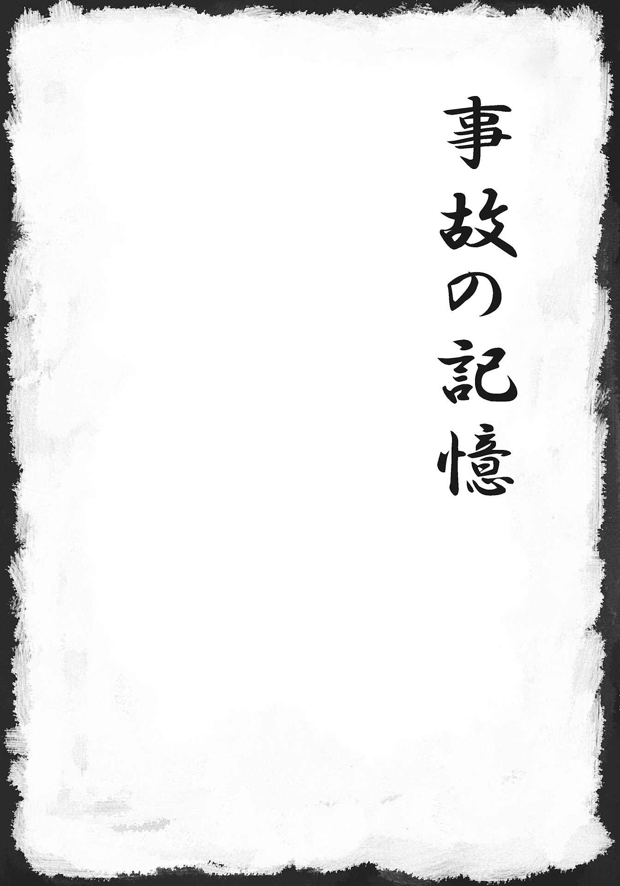
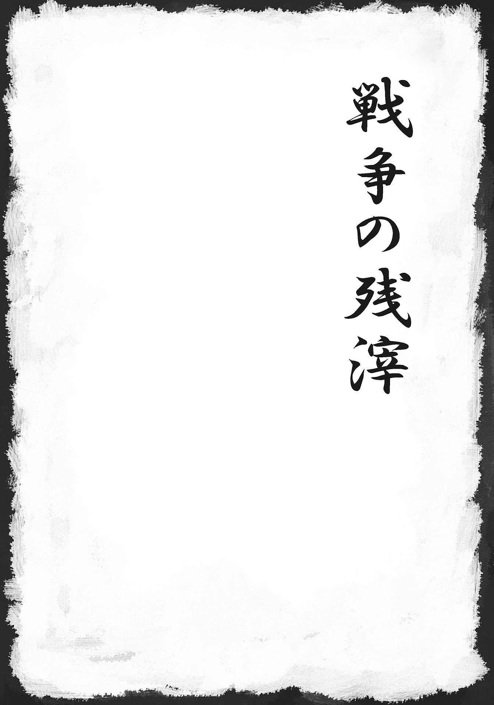
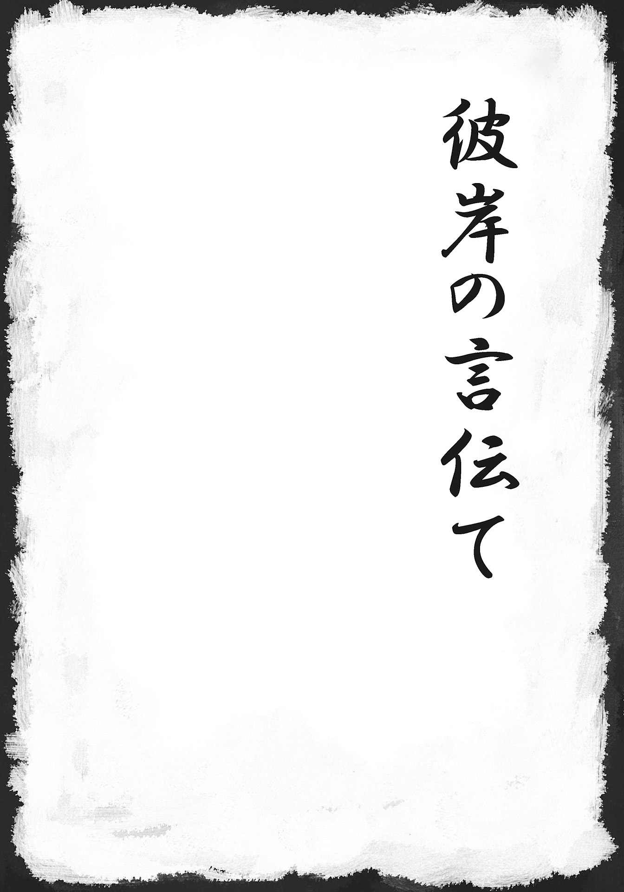
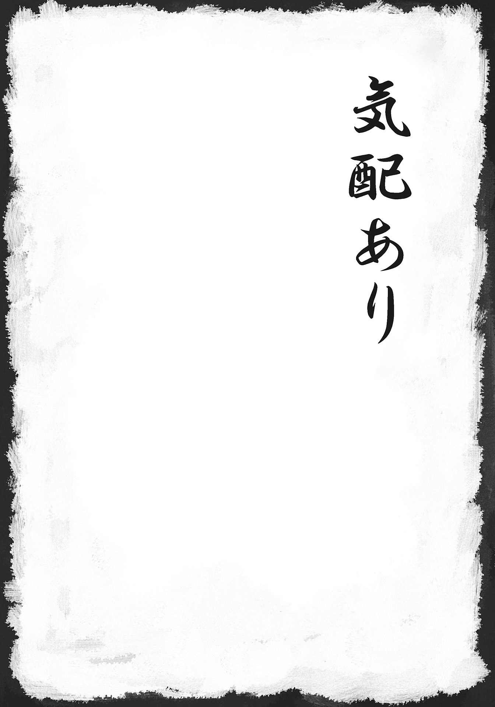
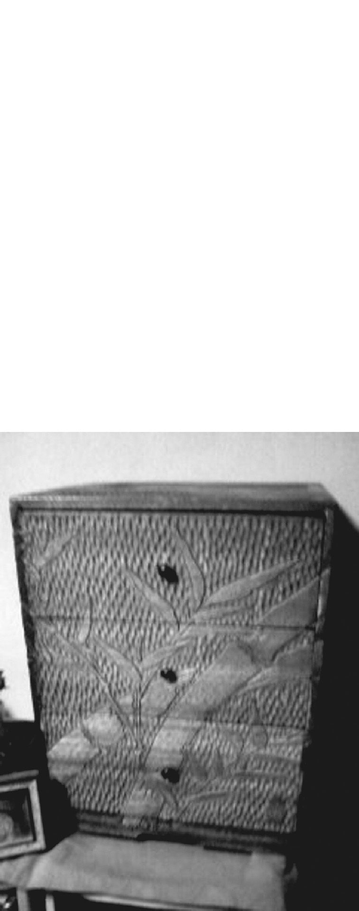
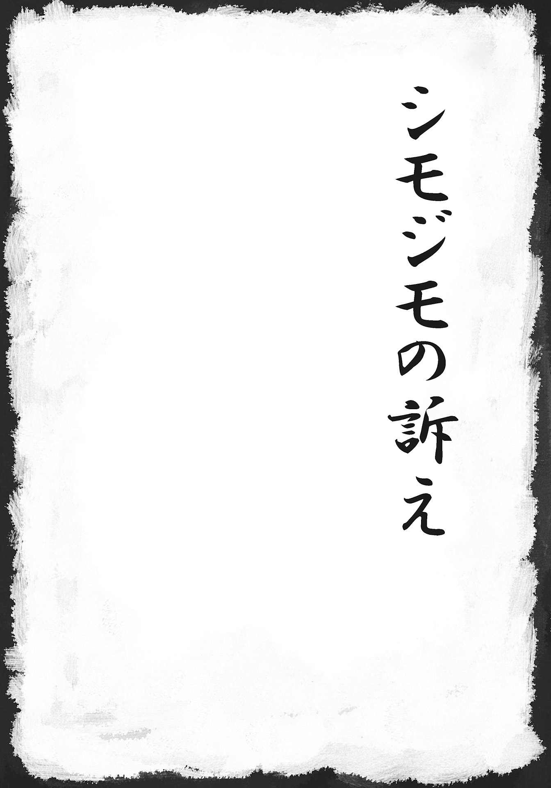
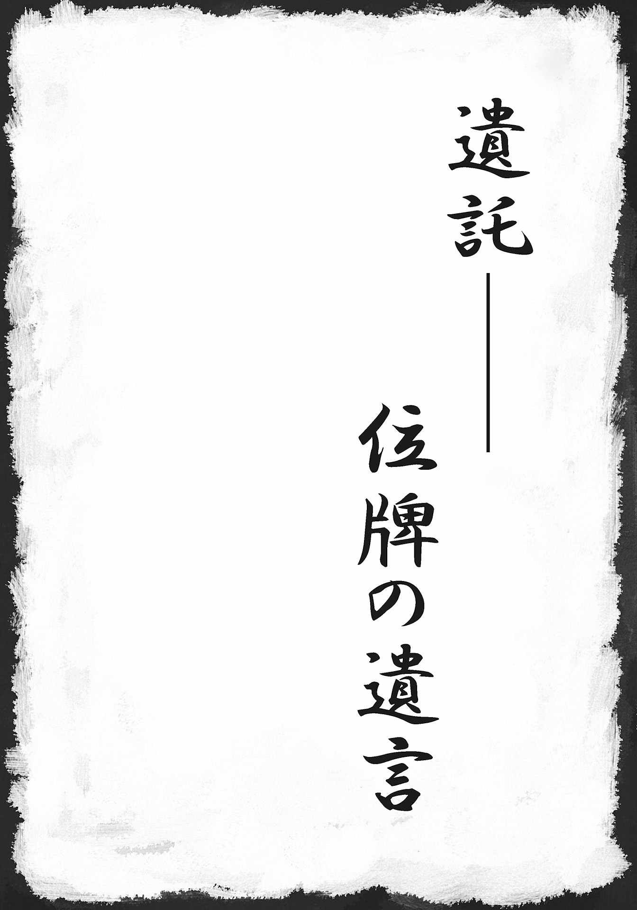

| 「極」怖い話 遺託 (竹書房文庫) | |
| 加藤一 | |
| (2011) | |
本作品は縦書きでレイアウトされています。
また、ご覧になる機種により、表示の差異が認められることがあります。
一部の漢字が簡略字で表示されていることがあります。
イラスト 浅沼テイジ（ネコノテンシスタジオ）

慰霊の山
一九八五年八月十二日。
あの夏、五二〇人の命が御 巣 鷹 に散った。
人類の航空史上、屈指の航空機墜落事故である。
尾翼損傷により制御を失った機体は、群馬県高天原山系、御巣鷹の南の尾根に激突。
機体は御巣鷹周辺の森に飛び散り、跡形もなく四散した。
乗客は、それぞれの人生の途上にこの機体に乗り合わせた。仕事であったり、帰省であったり、旅行の帰路であったり。
男性、女性、老人、子供、有名人、無名人。生前の肩書きとは分け隔てなく人生を寸断され、彼らの身体は山に森に飛び散った。
懸命の救助活動の結果、奇跡的に四人が救助された。
それ以外の乗客、乗員はこの御巣鷹の尾根を人生終 焉 の地とした。
墜落現場の様相は凄惨だった。
航空機は原形を留めておらず、人もまた同じだった。
御巣鷹の尾根はそもそも観光登山のための山ではない、原生林の生い茂る無名の尾根だ。
このため、事故現場に到達するのには道なき山を縦走せねばならず、また森を薙 ぎ払って散らばった機体と遺体の収容は困難を窮 めた。
遺体収容に関わった自衛官の多くは捜索作業後にＰＴＳＤを患い、以後大規模災害対応に当たる隊員の精神を慰撫するための部署が自衛隊内に作られたほどであるという。
その後、御巣鷹の尾根には慰霊碑と慰霊登山に向かう遺族のために登山道が設けられた。
この慰霊登山は、事故遺族、知己を喪 った類縁者、当時の関係者によって行われた。
単なるセレモニーとしてだけでなく、何かひとつでも痕跡を見つけたかったのだ。
見落とされていた遺品はないか。形見になるようなものは埋もれていまいか。
そこに行けば、会えるのではないか。
そんな想いを胸に抱く人々によって慰霊登山は続けられた。
三上恵美さんは、この事故に日本航空の地上勤務社員として遭遇することになった。
当時、事故を巡る対応は全社を挙げて行われ、彼女もまたその渦中で時を過ごした。
会社の重役が足を運ぶセレモニーとしての慰霊登山にも関わったが、それとは別にプライベートでも慰霊登山を行っていた。
何度目か、何年目かの夏のことだ。
その年、これまでに何度も足を運んだ御巣鷹の尾根を登った。
遺体の捜索はとうに終わり、遺品も機体の破片もほとんどが回収されている。
機体に樹々をなぎ倒されたまま剥き出しの山肌を見せている山の風景は相変わらずだが、うっすらと下生えが茂り、凄惨な事故現場であったことは次第に草木の合間に埋もれ始めている。いつか、この地も事故の痕跡を消し去ってしまうのだろう。
ただ、時折事故の痕跡が見つかることがある。
それはごく小さなネジのようなものであったり、元は何だったかは分からないが、焼けただれた人工の何かの一部分であったり。
それまで人の踏み入ることなどなかった場所だ。
そうして見つかる小さな痕跡の多くは今なお残る事故の遺物である。もう何年も過ぎているのに、それは今でも見つかるのだという。事故のことを皆が忘れても、忘れようと思っても、そうさせてはくれない。小さな部品のひとつが落ち葉の影から覗くのを見つけるたび、そこが五二〇柱の終焉の地であることを何度となく思い起こさせる。
恵美さんは慰霊碑に手を合わせ、そして御巣鷹の尾根に向けて手を合わせた。
彼らの無念を想い、ただただ頭を垂れた。
その夜のこと。地元のホテルに一泊した。登山の後、くたくたになった身体を一晩休ませてから翌朝帰るのが恵美さんの習慣になっていた。
湯を使って汗を流し、一息入れるともう他にすることはなくなった。
夏の夕暮れの残照はとうに消え、辺りは夜の帳 に包まれていた。
ベッドに入って枕元のライトの光量を絞った。
夏掛けを羽織って目を閉じる。
エアコンが低く唸るぶうんという音だけが室内に満ちている。
そのエアコンの機械音に紛れて、微かにしゃくり上げる声が聞こえた。
それは最初、遠く聞こえた。隣の部屋か。もしくはもっと遠くか。
小さく、少し引き攣 るような。
耳を澄ますと、それはよりはっきりと聞こえた。
ひっく、ひっく。ぐしゅ。
時折嗚 咽 が混じる。誰かが泣いているのだ。
そっと暗闇に目を凝らすと、客室の入り口付近に人影が見えた。
壁際に据え付けられた大きな姿見の前に誰かがいる。
ぼんやりと灰色の輪 郭 が、人の姿を形作っている。
そして、それは女性である。明確に判別は付かないのだが、確かに女性なのだ。
立ち尽くし、泣いている。
怖くはなかった。
ただ、悲しかった。
恵美さんもまた泣いた。枕を抱え、突っ伏して泣いた。
理由などない。いや、今更問うまでもない。
ただただ、悲しかった。泣くより他に何もできないほどに。
姿見の前の〈彼女〉と恵美さんは言葉を交わすでもなく、ひたすら泣いた。
一晩中、ずっとそうしていた。
翌朝、辺りがだいぶ明るくなってきた頃、漸 く〈彼女〉の気配が消えた。
いつの頃に消えたのか、良くは分からなかった。
泣き明かした恵美さんは、漸くうとうとし始めた。
きっと、瞼 がぱんぱんに腫れてるんだろうな──。
目覚ましが鳴るまで、あと少しだけ寝ようか......そう目を閉じたとき。
不意に、室内に甘い香りが広がった。
この香りはよく知っている。恵美さん自身が愛用している香水だ。
そして、これと同じ香りの香水を愛用していた友人を思い出した。
同じ社内サークルで知り合った友人。年齢は違ったが、同郷のよしみで仲も良かった。
彼女は、キャビンアテンダントとして事故機に搭乗していた。
──彼女が来ていたのだ。
恵美さんは確信した。
「あの事故は、本当に酷い事故だったから......」
遺体の多くは原形を留めていなかった。
腕一本、奥歯ひとつしか残らなかった遺体すらある。家族にすら判別ができず、ＤＮＡ鑑定や歯科治療の記録から漸く特定できた人すら珍しくなかった。
「だから、事故後の姿を見せたくなかったんだと思う」
恵美さんが退職してもう随分経つ。
あの晩、一緒に泣き明かした友人は、それっきり現れない。
だけど友人を忘れないために、恵美さんは今も慰霊登山を続けている。
彼女の杞憂
静枝さんの付き合っている相手には、家庭があった。
もちろん、その家庭に収まっているのは静枝さんではない。
相手である小田原は職場の上司である。言うなれば不倫。
付き合いだしてから二人の関係が何か変わった、ということもない。割り切った、身体だけを求め合う関係に過ぎない。
小田原の家庭を壊して、それを奪う。自分が小田原の妻になる──。
そんな未来はおよそ想像できなかったし、そんなことを求めてもいなかった。
小田原は遊ぶのには都合が良かった。火遊びをする相手としてなら。
だが、生涯のパートナーにするには問題がある。今この瞬間も現在進行形で自分との間に不義を働き、家庭を裏切り続けている。そのことに一片の躊躇 いも見せない。
そんな男を愛せるはずがなく、愛そうと思ったこともない。
身体の餓 えを癒 す、そのためだけに続いている。
そう割り切りながら、縁を切ることもできない。そんな関係だった。
小田原は一言で言えば手癖の悪い男だった。
小田原にとって静枝さんが何人目の女なのかは知らない。
が、少しでも脈があると思えば貪 欲 にモーションを掛ける。誰かが好き、ということなのではなく女という生き物を手に入れる、狩りのように自分のモノにするということそのものが好きなのかもしれない。
二人の関係については公然とは隠されていたが、同僚の何人かは目 敏 く気付いていたかもしれない。
「付き合ってるんでしょ？」
「ほどほどにね」
言葉には出さないけれど、そうと気付いている。皆気付いているけれど、気付かない振りをしている。それが、関係を断ち切りがたい理由のひとつだったかもしれない。
あるときのこと。
「静枝！ あの男とは別れたほうがいいわ！」
同じ職場の同僚で静枝さんの親友、琴美さんが激しい口調で詰め寄ってきた。
小田原と静枝さんの関係について彼女もまた黙認していたはずだ。大人の関係に口を挟むような野暮は言わないでくれる、そう思っていた。
「あいつ、私を口説いてきたのよ！」
琴美さんも既に結婚していて家庭があった。夫も子供もいた。
ただ、驚きはしなかった。あの情欲に貪欲な男ならありそうなことだ、と。
自分との関係は割り切ったもの。だから、他の誰かと関係を持とうとすることについても、互いに口を挟まない。そういう関係なのだ。
「でも、そういう人だし......」
取りなそうとしたのが災いした。
「あんたに怒ってるんじゃないのよ。あんたがどうしようとあの男は変わらないし、あんたにどうにかできるもんでもないでしょ」
だから、別れるべきだ。あんな男には、早く見切りを付けるべきだ。
激しい剣幕でそうまくし立てる琴美さんの言は全て正しい。
返す言葉もない。と言って、見切りを付ける踏ん切りも付かない。
ぐずぐずと言い訳する静枝さんに対して、琴美さんはぴしゃりと言った。
「そう......分かった。あんたがあいつと手を切れないなら、私があんたと手を切るから。この先、私には関わらないで」
そうは言っても、静枝さんも琴美さんも、そして小田原もまた同じ会社の社員である。
部内の会議や親睦会など、静枝さんと琴美さんの事情を知らない他の社員と共に臨席しなければならない機会はある。
顔を合わせても、以前のような気易い挨拶はなくなった。
互いに視線を合わせず、必要最低限の接触しか持たない。
どうにか友情を修復したいという気持ちはあった。
ただ、その前提条件として小田原との関係を断ち切らなければならない。分かっているのに未だそれができず、ずるずると関係は続いている。
その気まずさが二人の間をますます冷え込ませた。
原因を作り出した小田原はと言えば、およそ空気など読まない男だった。
静枝さんとの関係はそのまま続いた。
シフトの違いはもちろんあったが、疎 遠 になった琴美さんとの絶交状態は一カ月にも及ぼうとしていた。この一カ月、電話はおろかほとんど口も利いていなかった。
──ちゃんと話をしなくては。
そういう気持ちは常にあったが、小田原に呼び出されればそれに応じてしまう。
結局、割り切った関係だからと嘯 きながら、友情と男を秤 に掛けて男を選んでいた。
頭では分かっているのに、どうしてもダメだった。
そんな状態がこの先もずっと続くのか、とも思っていた。
そして、その日は来た。
一九八五年八月十二日。
群馬県上空にて、事故が起きる。
御巣鷹の尾根に消えた一二三便に、琴美さんも乗り込んでいた。
仕事ではなく、家族全員で。プライベートな旅の途上だった。
ヘリからの映像を流すニュース画面は、森を抉 り取られて山肌を剥き出しにした斜面を映すばかり。そこには静枝さんが見知った航空機など影も形もなかった。
──でも、これは嘘でしょう？
目の前で起きているのが現実であることは理性では理解している。
けれど、それを受け止めることができない。
それでも身体は気 忙 しく動く。今しなければならないことを、今できることを。
少しでも気を抜けば、琴美さんを喪った事実に押し潰されてしまいそうだった。
ちゃんと話し合うことができなかった。
ちゃんと謝ることもできなかった。
いつか、そのうちどうにかなると思っていた。
いつか、そのうちが来ないなんて、思ってもいなかった。
取り憑かれたように働き、糸が切れたように眠った。
一人でいることに耐えられなかった。
事故から日が経つにつれ、もう琴美さんは戻ってはこないのだということが動かしようのない確定事項として迫ってくる。それをまた受け止めきれなくて、静枝さんの心にはぽっかりと穴が空いた。
その穴を埋めるものを求めた。
手っ取り早いのは男だった。
手を掛けずとも、寄ってくる。いつでも都合のいいときに求めに応じる。
小田原の目にはそんな風に映っていたかもしれない。
あれだけ謝りたい、謝るための前提がこの男と手を切ることだったはずなのに、謝るべき親友を亡くした心の穴を、手を切るべき男で埋める。あまりにも滑 稽 だった。
なのに、それでも自分を変えることができないまま、静枝さんは小田原との救いのない逢瀬を重ね続けた。
琴美さんとのことを悔やんでも悔やみきれず、忘れようにも忘れられない。
この頃、同僚の多くが静枝さん同様の苦痛を背負っていた。
遺族の多くも同様であったろう。それだけに、自分達は被害者のような素振りを見せられない。見せてはならない。そう言い聞かせて人前では気丈に振る舞い続けていたものの、静枝さんの心と身体に蓄積した疲労は、限界に達しつつあった。
数カ月に及んで体調不良は続き、常に身体が重たかった。
そして一九八六年夏。
事故から一年を迎えた。現地に慰霊碑を建立し、遺族や会社の関係者、多くの所縁のある人々が慰霊のためにあの尾根に向かうのだという。
いても立ってもいられなかった。
体調不良を押して、静枝さんもまた現地へ向かった。琴美さんが人生の断絶を強いられた場所へ。琴美さんに会いたかった。会って謝りたかった。その思いに突き動かされ、麓 の町にあるホテルにまではどうにか辿り着いた。
しかし──。
「無理ですよ。そんな体調で登れる山ではない」
一年前の救助と遺体収容に当たった自衛隊、地元の消防団の苦難は広く知られていた。
御巣鷹の尾根はそもそも観光用の山ではない。
後年、手すりや階段を設けた慰霊登山道が整備されたが、当時は山に慣れた人間ですら簡単には踏み入ることが難しかった。昇魂之碑と刻まれた慰霊碑の除幕の場に、遺族の多くが参列したのは並大抵のことではなかった。
迷いを遺しているような者が辿り着くことなど許されない場所なのか──。
その日、静枝さんは慰霊登山を諦め、琴美さんが最後を迎えた地に向けて麓の町から祈りを捧げた。
会おうと思ったのに会えなかった。また、切り出せなかった。
琴美さんが存命のうちに何度も繰り返した釈然としない迷いは、彼女を喪った今も続いている。静枝さんの中ではあの日のまま時が止まり、琴美さんに言い渡されたことを何一つ変えられないでいる。
自宅に戻ると、留守番電話のランプが点滅していた。
『今夜、会いたい』
小田原からだった。
結局山に登ることこそできなかったが、群馬までの往復で身体は疲れ切っていた。
──何と言って断ろうか。それとも無視してしまおうか。
逡巡しているうちに、再び電話が鳴った。
『どうしても会いたいんだ。きっと、一人でいるのは寂しいんじゃないかと思って。だから今、君の傍にいたいんだ』
心にはまるで響かない台詞だった。
だのに、気付いたときには小田原に指定された店にいた。
小田原は琴美さんについて形ばかりの悔やみを言い、静枝さんを気遣うような素振りを見せた。
──どうせ口ばかり。
真意が伴っていないことなど、今更腹を立てることでもなかった。
近頃は静枝さんとのことを妻に隠す素振りすらなくなってきた。
口実らしい口実も作らず、欲望のままに呼び出す。
そしてまた、それに応じてしまうことからも抜けられない。
都合のいい女だ、と決め付けているのがその態度からもありありと分かる。
「君の部屋に行こう」
そして近頃はいつもこうだった。愛人の部屋に公然と上がり込むことも厭 わない。
というより、頻繁な逢瀬で嵩むホテル代を惜しんでいるのかもしれない。
この男に気遣いなどありはしない。
静枝さんの疲れた身体とそれ以上に疲れた心は、小田原に抗弁する気力も失っていた。
言われるがまま、小田原を部屋に上げた。
ただ、渇きを満たすためだけの行為をした。最近ではもはやそれでは心に空いた空虚な穴の渇きも餓えも満たすことはできず、ただ惰 性 でそうしているだけだった。
事を済ませ、シャワーを浴びる。
──一体、何をやっているんだろう。
琴美さんを悔やむ慰霊の旅から帰ったその足で男と寝ている。そんな自分を悔いる気力も朧 気 だった。
ベッドに戻ると小田原は目を閉じていた。
用を済ませて満足し、眠ってしまったのだろう。最近はいつもこうだ。
静枝さんもベッドに潜り込んだ。
小田原に背を向けて目を閉じると、背後から抱きつかれた。
まだ物足りないのか。
今からもう一度繰り返すのも億 劫 だった。
耳元にくぐもった呟きが聞こえる。
唸り声とも呻き声とも違う。
ただ、はっきりとした言葉を喋っているようにも思えない。
念仏のように低く続く。
寝言だろうか。
身体を捩って振り向くと、小田原は寝息を立てていた。
口元がもぞもぞと動いている。
何事か呟いているのは間違いなかった。
そして、不明瞭だった唸りは、次第にはっきりとした言葉となった。
「静枝」
小田原は静枝さんの名を呼んだ。
「静枝、静枝」
ただ、それは小田原の声ではなかった。
一年ぶりに聞く、懐かしい声。
コロコロとよく通る琴美さんの声だった。
「静枝、静枝」
名前を呼ぶたび、小田原の唇が静枝さんの名前をなぞる形に動く。
声色を変えているのではない。間違いようのない声だ。
「......琴美？」
小さく返事をしてみた。
琴美さんの声は、一拍置いて言葉を続けた。
「お願い、静枝。この男とだけはダメ」
生前、琴美さんと決裂してしまう前に、何度も聞いた台詞だった。
何度もこうして諭 された。
「聞いて、静枝。このままじゃあなたが不幸になるだけよ」
──だから、静枝。この男はダメ。この男だけは絶対にダメ。
小田原の唇から零れ出る懐かしい親友の声は、もう一度そう繰り返した。
そして、唇が動くのをやめるとそれっきり言葉は途切れた。
耳を澄ませても聞こえてくるのは鼾 ばかり。
小田原は熟睡していた。
静枝さんは枕に突っ伏した。
そして泣いた。
どうしようもなく涙が流れた。
親友の杞 憂 が、存念が、痛いほどに突き刺さった。
馬鹿だ。私はどうしようもないほど馬鹿だ。
こんなに、こんなになっても心配してくれる親友に、耳を貸さずにきたなんて。
──大馬鹿だ。
悔しくて情けなくて切なくて申し訳なくて悲しくて、涙が出た。
声を殺して嗚咽を握り潰すようにして、一晩中泣き続けた。
ごめん。琴美、ごめん。本当にごめん。
翌朝、小田原を起こした。
二人一緒に仲良く出勤するわけにはいかない。
静枝さんは一晩泣き明かして決めた覚悟が漏れ出さないよう、努めていつもと変わらぬ素振りを装った。
「じゃあ、会社で」
そんな言葉を投げかけ小田原を送り出すと、テキパキと事を進める。
会社に向かうつもりなど毛頭なかった。
その足で開店したばかりの不動産屋に駆け込む。
「部屋はありませんか──」
今の部屋とは違う部屋、違う町。小田原が知らない、誰も知らない町がいい。
内見もそこそこに、新しい部屋を即決で決めた。
会社には「急な体調不良」と伝えて有休を取った。
こうと決断してからの静枝さんの行動は迅速だった。
翌週には引っ越しを済ませ、そのまま仕事も辞めた。
長く勤めてきた仕事だったが、躊躇いはなかった。
部屋の電話番号も変えた。
ごく親しい友人を口止めし、同僚には新住所は教えなかった。
携帯電話も電子メールもない時代だ。住所と電話番号を変えてしまえば、ただそれだけで消息を絶つのは簡単だった。
新しい仕事を始めた。
資格らしい資格があったわけではなかったが、仕事の必要から身に付けた英語とフランス語が役立ち、塾講師の仕事が決まった。
そうして新しい生活が始まり、小田原の呪縛もあっさりと断ち切ることができた。
これまでの逡巡は一体なんだったのか、と思わず笑みが零れてしまうほどにあっけなく終わった。
心は晴れ、暗く淀 んだ日々に少しずつ光が差し始めたようにすら感じられた。
「琴美......ありがとうね。ありがとう」
その年の暮れ、静枝さんと同じ頃に会社を辞めた元の同僚から電話があった。
小田原との関係も知る、琴美さん亡き後唯一心を許した人である。
『久しぶり』
話の大部分は互いの近況を伝え合うような他愛のないものだったが、彼女が伝えたい本題は別にあるようだった。
言い淀んでいるようであったが、通話が終わりに近付く頃にぽろりと零した。
『あのね、小田原さんのことなんだけど──女と逃げたんだって。今、失踪中だって』
その名前を聞いても心ときめくことはもちろん、もはや心がざわめくことすらなかった。
『何か、その逃げた女とは別のね、また別の女を騙して借金させて。そのお金を持って、そう、持ち逃げしていなくなったんだって』
驚きはしなかった。あの男ならありそうなことだ、と。
「それじゃあまた、そのうち」
受話器を置いた。
同時にあの夜の琴美さんの声が、言葉が脳裏に甦った。
〈静枝、聞いて。──このままじゃあなたが不幸になる。この男だけは絶対にダメ〉
このことだったのだ。
親友が伝えたかったのは、このことだったのだ。
あのとき親友の言葉で目が覚めていなければ、騙されて借金をさせられたのは恐らく自分だっただろう。
救われたのだ。琴美さんに。
その日、静枝さんは泣いた。
あの晩と同じくらい、いやそれよりもずっとたくさん泣いた。
泣いても泣いても涙が涸れないのが不思議なくらいに泣いた。
ありがとう、と繰り返して泣いた。
それからだいぶ経って、静枝さんはまた男性と付き合うようになった。
もちろん、今度は不倫などではなかったが、また以前のようになりはしないかという不安が完全に癒えたわけではなかった。
そんな折、夢に琴美さんが現れた。
彼女は無言で、しかし終始笑顔だった、という。
静枝さんは思い悩んだ。自分の過去を隠してこのまま付き合っていてもいいのか。
いつか過去が誰かから漏れて、自分は失望されてしまうのではないのか。
親友とのことを、どう理解すればいいのか。
思い悩んで、そして彼に打ち明けた。
琴美さんとの諍 い、そしてあの不思議な一夜と遅すぎた和解。
そしてまた夢に、琴美さんが現れたこと。
彼女は笑顔だった、ということ。
「......なるほど」
彼は真剣な面差しで静枝さんの話に聞き入った。
訝 ることも混ぜ返すこともなく事の次第を全て聞き終えると、柔らかな笑みを浮かべた。
「それなら、僕は琴美さんに感謝しなくちゃな。彼女が君を諫 めてくれなかったら、僕は君に出会えなかった。そうだろ？」
涙が零れた。静枝さんはまた泣いた。嬉しくて、泣いた。
そうして、彼との結婚を決意した。
「琴美は私のために山から帰ってきてくれたんだと思うんです」
静枝さんはそう信じている。疑う理由などない。
その後の結婚生活は順調で、子宝にも恵まれた。
出産はだいぶ遅くなったが、子供は元気に育っている。
あの御巣鷹で、琴美さんは家族全員と一緒に亡くなっている。もし生きていたら、今でも家族ぐるみの付き合いをしていたかもしれない。そうしたかった。
この事故に纏わるお話を託されるに当たって、御巣鷹という名前を出すべきかどうか悩んだ。かつては、遺族の心情を考えるなら、ましてや怪談としては出すべきではないとも言われてきた。
ただ、この話と前述の「慰霊の山」の二件については、それぞれお話を託して下さった方々から「御巣鷹の名前を出すべき、むしろ是非出してほしい」というご要望を賜 った。
あの事故の後も大小様々な空や地を巡る災害が起きた。そのたびに古い事故の記憶は風化していき、そこで生を終えた人々に関する記憶は歴史の一頁に追いやられてしまう。
だがこれは語り継いでいくべき物語だ、という強い思いを持つ人も多い。
その周囲にあるものが、不可思議な怪異を伴う怪談であったとしても。
「だから──供養にもなると思うので、是非このことを書いて下さい」
そうご承諾をいただいた。
事故から四半世紀以上が過ぎた。遺族の高齢化によって、慰霊登山を続けることができる人数も年々減っている。
静枝さんとご家族は、今でも夏になると親子三人で御巣鷹の尾根に登っている。
琴美さんに会いに行くためだ。
この先、身体が動く限り、静枝さんはずっとそれを続けていくだろう。
猿庫の泉
戸塚さん一家は、ご両親がアウトドアに凝っていたのだそうで、休日になるとお父さんが車のハンドルを握っては、家族全員で人里離れたキャンプ場に繰り出していった。
お父さん、お母さん、お兄さん、妹さんの四人家族。
その他に猫が五匹ほどいた。
「全員乗ったか？ 猫も乗せたな？」
猫も家族であるということ、そして家を留守にすると猫の世話ができないからということで、五匹の猫も毎回キャンプに連れられていった。
この日の目的地は、飯田市にある猿庫の泉。名水百選にも選ばれた湧水地である。
「そこの近くにオートキャンプ場があるんだよ」
お父さんはうきうきしながら右へ左へと車を走らせる。
休前日の夜から出掛けて日曜の夜までたっぷり遊ぼうという算段だ。
飯田市街から大平街道を登り、松川ダムから流れる松川沿いにある、妙義公園キャンプ場を目指していく。
しかし同じ考えの家族連れに先を越されてしまったようで、空いているテントサイトは見つからなかった。
「どこか、テントを張れるところがないか、もう少し探してみよう」
ちょっと車を駐められて、テントを張って夜を明かせそうなところ。
何しろ周囲は人里離れた山である。少々なら迷惑にならずに済みそうな場所くらい見つかるだろう。
オートキャンプ場を出て大平街道に戻った。
松川ダムに向かう手前辺りで松川を左に見ながら右手に折れて林道を進んでいくと、猿庫休憩所に出た。
この先は沢が続く渓流釣りのスポットでもあり、キャンプにも具合がいい。
野 点 もできる休憩所として知られる猿庫の泉は、早朝から水汲みに訪れる人も多く、静かに朝を過ごすのには少し気まずい。
「もう少し奥に行ってみよう」
休憩所の先を暫 く進むと、ぽつりと道路灯の点った開けた場所があった。
車を駐めるスペースも十分で、テントを張るのにも具合がいい。
先客の気配もない。
「こりゃいい。むしろ迷った甲斐があったな」
お父さんは嬉々として車を寄せた。
場所を探して散々彷徨 ったせいもあって、時間は零時に近い。
ぐずる子供達を寝かせるため、両親は手慣れた手つきでテキパキとテントを広げ、家族四人と猫五匹は漸く床に就くことができた。
夜更けのこと。
「うううー、ううー、ふーっ」
それまで大人しく眠りこけていたはずの五匹の猫が、一斉に唸り声を上げた。
まるで春の盛りの縄張り争いのように、激しく喉を鳴らしている。
「ふぎーっ、ふぎいいいいっ」
間近で啼 き狂う猫達の騒がしさにお父さんは目を覚ました。
「何だ、お前らうるさいぞ」
声を潜めて叱ってみるが、猫達は耳を伏せて唸るばかり。
「どうしたのよ、あんた達......」
お母さんも目を覚ます。子供も起き出してきた。
道路灯の幽 かな明かりが届くおかげで、テント内は仄 かに薄暗い程度には見通せた。
猫達は身を寄せ合うように団子になっていたが、背中の毛を逆立たせ尻尾を膨らませてテントの奥を睨み付けていた。
「......何か動物でもいる、のかな」
耳を澄ますと、微かに何かが聞こえた。
〈......っ、......ぃ、......〉
猿か熊の類でもいるのか、と身構えたが、それは人の声のようだった。
一瞬、ホッと緊張が解れる。
自分達と同じように、テントを張れる場所を求めている人かもしれない。
〈......ぃ、......、......な〉
ひそひそ、ぼそぼそという声は、男のもののようだった。
声音の異なる男が何人かいるようで、それが互いに声を掛け合っている。
一人、二人ではない。もう少し多い。
その声はテントの四方から聞こえていた。
何か互いに喋り交わしている。しかし、低く呟くようなそれは、テントの中からも声とはっきり分かるのに、その内容がまるで分からない。
声は動いていた。
テントの回りをぐるぐると歩き回っているようだ。
道路灯の淡い明かりに照らされて、テントに人影が差した。
二本足で歩く人影は、確かに人間のものだった。
一人、二人......人数ははっきりとは分からないが、道路灯との間を間断なく横切る影、それに連れて声も移動していくことから、それが複数人であることは間違いなかった。
──シュッ。
──シュッ、シュッ。
ナイロンの擦れる音が聞こえた。
テントが内側に少し出っ張る。その出っ張りが、音とともにつつつと動く。
外の男達がテントに触っているらしい。
テントの正面、出入り口は道路灯のある側に向けてあった。
出入り口の上のほうには、明かり取りと蚊避けのためにメッシュになった小窓がある。
そこから、道路灯の明かりがテント内に零れている。
お父さんは腰を屈めて立ち上がり、メッシュの小窓から外を窺 った。
人の姿はなかった。
車、道路、テントの周囲。うっすらと照らされた場所に人影はない。
しかし、視線をテントの内側に戻すと、道路灯の明かりの前を横切る男達の影だけが、変わらず薄い膜を透かして移動していく。
〈......ぁ、......ん、......〉
──シュッ、シュッ。
何事か言葉を交わしながら、テントを撫で続けている。
猫達はその場に硬直して、ただ唸り声を上げるばかりだ。
「お父さん、怖いよ。帰ろうよ」
息子に言われるまでもなく、お父さんも生きた心地はしなかった。
しかし、すぐには帰れない。
得体の知れない誰かがいる外に出るのが怖いというのもあるのだが、この真夜中にテントを畳んでＢＢＱコンロやその他のキャンプ道具を車に漏れなく積み込む自信がなかった。
とにかく今は、朝を待つしかない。
「明るくなるまで頑張ろう、そうしたら朝一で帰ろう。それまで我慢しなさい。お父さんも我慢するから！」
テントを撫で触る音と話し声と周囲を歩き回る人影は、明るくなるまで続いた。
それまで、一家はずっと怯え続ける外なかった。
翌朝、テントの周囲が明るくなり、人影が見えなくなった。
いつのまにかテントを触る音も消え、猫達も眠りこけていた。
お父さんは、ただ一人眠り込んでいた娘を起こし、家族総掛かりでテントを畳み始めた。
「あれ？ どうしてテントしまっちゃうの？ 朝ご飯どうするの？」
「あ、ああ。それは後でな。うん、とにかく後で」
お母さんも息子さんも、互いに視線を交わすばかりで何も言わずに手を動かした。
とにかく、一刻も早くこの場所から立ち去りたい。それだけを考えた。
猫達をケージに入れて車に乗せ、テントのポールを片付けていたお母さんが手を止めた。
「......ねえ、お父さん......これ」
お母さんに促されて、お父さんも〈それ〉の存在に初めて気付いた。
テントの真裏に、大きな慰霊碑が建っていた。
猫達が、凝視し唸り続けていた方角だった。
こんなに大きな慰霊碑なのに、どうして昨晩は気付かなかったのか──。
この猿庫の泉近辺には、幾つかの碑がある。
そのうちひとつは「松川入部落集団移住之碑」。これは、昭和四十一年に松川入の人々が集団で離村し、地域が廃村になったことを記したもの。
そしてもうひとつ。
戸塚さんの記憶と照らし合わせると、ご一家がテントを張ったのは、恐らくこのもうひとつの碑のほうで、こちらは「遭難の碑」。昭和四十四年、この地へ合宿に訪れていた神戸市立御影工業高校山岳部の引率教師、部員生徒七人の遭難事故に対する慰霊碑である。
豪雨に遭い、避難小屋で難を逃れて熟睡していたところを鉄砲水に襲われたのだという。

沖縄の家
日本各地には、様々な造りの家がある。
それぞれの風土に合わせて発展したもので、それらはその土地によって独特のスタイルを持っていたりもする。
伝統的な沖縄の家の特徴と言えば、独特の赤い瓦を備えた平屋造りである。
これは台風の玄関口である沖縄で、毎年やって来る暴風に耐えるための智恵と言える。
建物の周囲には、南と東に外廊下としてくの字型の縁側がある。
この内側に大きく分けて六つの部屋がある。
まず南の縁側に面した表座（部屋）が三つ。それぞれ一 番 座 、二番座、三番座と呼ぶ。
一番座は家の最も奥にある客間である。この一番座の北側に、一番裏座がある。一番裏座は男の子や若夫婦の部屋。
次に二番座は先祖を祀 る部屋。謂 わば仏間に相当する。仏壇 もここにある。この二番座の北側に二番裏座がある。二番裏座は主にその家の主人夫婦の部屋。
裏座の使い途は実際には家によって様々で、必ずしも取り決め通りというわけでもないらしいが、表座の用途はどこの家でも概ね定まっている。
最後に三番座は家の西側にある部屋で、居間替わりになる。三番座の北にあるのは台所で、ここで煮炊きをする。
伝統的な沖縄の住宅は玄関に相当するものがない場合が多いので、台所の勝手口を通用口としたり、また三番座の脇に玄関のような出入り口を設けたりするのだそうだ。
金城香織さんが小学三年生のとき。
香織さんはお兄さんと一緒に三番座の隣の部屋に寝かされていた。
三番座との間はカーテンだけで仕切られており、狭苦しい場所だった。
明け方、目が覚めた。
時計は朝の四時半を指している。辺りはほんのりと明るくなり始めてはいたが、起き出すには少し早い時間だった。
眠い目を擦っているうちに、出されていた宿題があったことを思い出した。
お兄さんはまだ眠っている。
香織さんはお兄さんを起こさないようにそっと身体を起こすと、三番座に出た。
居間として使っている三番座に卓袱 台を出し、その上に宿題のノートを広げた。
無心になって鉛筆を走らせているうちに、それは起きた。
見られている。
誰かに見られている。
家族、ではない。お兄さんも両親も、眠っている。
しかし、家族とは明らかに異なる濃厚な気配が、香織さんをジッと見つめている。
視線が絡みつくというのか、首筋に誰かが撓 垂 れかかって貼り付いているような感覚がある。喉から胸がひやりと冷たく感じられた。
身体が動かなかった。
金縛りに遭っている、というのとは違う。自分の意志で動かそうと思えば、多分普通に動くことはできた。
が、それとは別に「動いてはいけないのだ」という警報が、脳内に鳴り響いていた。
気配のするほうを振り向いたりしてはいけない。
自分がその気配に気付いているということを、気配に気付かせてはいけないのだ。
だから、気付かない振りを続けるしかなかった。
鉛筆を握り、ノートを凝視する。
問題を幾ら見つめても頭の中を素通りするばかりで、答えにおよそ集中できない。
──見ないように、気付かない振りを。
自分にそう言い聞かせているうちに、気配は近付いてきた。
いや、違う。ノートに見入っているうちに、気配は香織さんの真横に移動していた。
そこに明らかに何かがいる。
見ない、見ない、絶対にそっちを見ない。
そう自分に言い聞かせるのだが、それも次第に限界に近付いてきた。
香織さんは顔をノートに向けたまま、目玉だけ動かして右を見た。
三番座の西側には引き戸があった。古風なガラス引き戸が嵌 め込まれたそこを、この家では玄関にしていた。もっとも、日常的には開け放たれた縁側から出入りすることのほうが多く、玄関を意識することはあまりなかった。
その玄関に、人影があった。
女だ。
黒く長い髪。そして、ワンピースのような服。その服も黒い。
ガラス引き戸に貼り付くようにして黒い女が玄関の前を往復している。
入ろうとしているのか、それとも逡巡しているのか。女は玄関を行ったり来たりしてはいるのだが、引き戸に手を掛ける様子はない。
そして、決してこちらを──室内の様子を見ようとはしなかった。
見知らぬ来訪者の思惑を図りかね、香織さんは顔を背けたまま女の動きを目で追い続けた。女は、時間にして十分近くもそうしていた。
（怖い、怖い、怖い怖い怖い怖い怖い怖い怖い怖い怖い怖い......！）
募る恐怖心に耐えかねた香織さんは、ついに顔を上げた。
誰もいなかった。
直前まで続いた睨め付ける気配も、幾度となく玄関を往復していた黒い女も。
ただ、姿は何も見えないにも関わらず、香織さんに向けられた気配だけは消えなかった。
見られている。
一挙手一投足を間断なく間近で見られている。
香織さんは宿題を諦めた。
お兄さんを起こそうとしたがそれも諦め、その後はお兄さんにしがみついて寝直すことで、どうにかやり過ごした。
これはきっと夢だ。寝ぼけていたんだ。怖い夢を見たんだ。
そう思い込もうとした。
数日後の夜。
「ぬぅぅ...... ううーん......」
夜半、お父さんが唸り声を上げていた。
仏間になっている二番座に布団を敷いて、家族全員がそこで眠っていたのだが、お父さんの唸り声で家族は目を覚ました。
「お父さん、また魘 されてる」
元々、金縛りに遭ったと騒ぐことの多い人で、しばしば夜中に唸って〈助け〉を求めていたので、お母さんは手慣れた様子でお父さんを揺り起こした。
「ちょっと、お父さんどうしたの。起きて。起きてったら」
起こされたお父さんは、肩で大きく息を継ぎながら窓を睨 んだ。
「窓の外に何かいる」
二番座の窓にもカーテンがあった。カーテンは閉められていたが、少々寸足らずなため両側から合わせても隙間ができることがあった。
その隙間に誰かがいた、という。
「女の子がいた。こっちを見とった」
──家族が寝静まる中、小さな女の子が二番座の中を覗き込んでいた。
（こんな時間にどこの子だろう......）
いや、あれは本当に子供、だろうか？
お父さんは、その女の子から目を離せなくなった。
ジッと見つめていると、不意に女の子の身長が伸びた。
（おおっ！）
浮き上がった、というほうが正しいだろうか。
女の子は背後から抱え上げられていた。
女の子を抱き上げたのは女だった。
「お父さん、その女ってどんな女？」
「黒かったな。こう、黒い服を着とってな。髪が──髪が長い。そんで、俺をこう、キッと睨んでおったな」
黒い女は女の子を抱えてお父さんを一睨みすると、そのまま三番座の奥へ歩いていった。
「ただ、歩き方が妙だったな」
上下動がなかった。
歩みに乗じて身体が揺れるということはなく、女の子を抱えた姿勢のまま畳の少し上辺りに浮き上がり、滑るように進んでいった。
そして女は消えた。
家の外に誰かが出ていった気配はなかった。
この家にはそれから三年ほど住んだ後、県内の別の家に引っ越した。
新居はごく普通のコーポだった。
その日、お兄さんは仕事に出掛けるため、いつもより少し早く起き出してきたところだった。
自室から出てリビングに向かおうとしたところで、お兄さんの足が止まった。
玄関に向かう廊下のドアの隅に、誰かが座り込んでいる。
（香織......の、はずはないよな？）
薄明るい廊下で、女の子が体育座りをしていた。
歳の頃や風体は、以前の家でお父さんが「見た」と言っていた少女によく似ていた。
女の子は、膝を抱えた姿勢のまま、お兄さんをジッと見つめていた。
家族はリビングのほうで寝ているのだが、そこに向かうには自分を凝視している体育座りの女の子の横を通らねばならない。
それはできれば選びたくない選択肢だった。
お兄さんは、自室のドアをゆっくりと閉めた。
そして布団に潜り込み、待った。
これ以上寝床で頑張っていると仕事に遅刻する──。
とにかく消えてくれ、いなくなってくれ、と祈りつつぎりぎりまで待って、それから再びドアを開ける。
恐る恐る廊下を覗くと、もう女の子の姿はなかった。
お兄さんが体育座りの女の子を目撃した数週間後。
再び、香織さんの番が回ってきた。
自室のベッドに横たわっていると、不意に身体の自由が奪われた。
（ああ、金縛りか）
何でも、お父さんの家系では〈こういうこと〉にしばしば遭うらしい。香織さんの幼少の頃から、お父さんが頻繁に金縛られている様子は何度となく遭遇してきた。
その都度、金縛りの何たるかについても説明されてきた。
（暫く我慢していれば治まる。これはタダの金縛りだ──）
そのメカニズムは分からないが、ジッとしていれば治まるものだ。一時的な発作のようなものだ。焦ることも驚くこともないんだ。
自分にそう言い聞かせて呼吸を落ち着かせながら、手足の硬直が治まるのを待っていると、何かの気配があることに気付いた。
近い。
物凄く近い。
呼気が耳に掛かるくらいに近い。
香織さんの右側にいる。
小学生の頃の体験が甦ってくる。そういえば、あのときも右側だった。
身体はまだ動かない。
以前と同様に、目玉だけを動かして気配のする方向を見た。
女がいた。
長い黒髪、黒いワンピースの女。
女は香織さんの右側に添い寝をするように横たわっていた。
そのか細い指先が、香織さんの腕を握りしめていた。
女はこちらに顔を向けていた。
このとき香織さんは初めて女の顔を見た。
が、顔はなかった。
目もなく、口もなかった。鼻と思しきものはある。
目と口についていえば、黒い穴が深く掘られたような──顔に二つの穴が抉られているような印象を覚えた。
吹き飛ばされたのか穿 り返されたのかは、想像も付かない。
ただ、その何もない〈目〉で女はこちらを凝視していた。
その穴に飲み込まれそうだった。
香織さんは、腕に絡みつく女を振り払った。
身体を捩って、ベッドの端から転げ落ちる。
大して段差などないベッドであるはずなのに、途 轍 もなく高い場所から放り出されたような錯覚に見舞われる。
落ちる。落ちていく──── 落ちた。
「──夢か！」
床に叩き付けられた痛みを堪えながら天井を仰ぐと、ベッドの上から女が手を伸ばしているのが見えた。
夢ではない。
夢ではないのだ。
〈......たすけて〉
掠れた声で、女が微かに呟くのを聞いた──ような気がした。
そしてもう一度、左肩を強打した。
床に、もう一度落下していた。
「お父さんが見たのは間違いないですし、小学生の頃に見たのも確かです。寝ぼけてたんじゃなくて、ちゃんと目が覚めてるときに見たんですから」
以前の家で出会った女であることは間違いなかった。
しかし、女はそれっきり現れていない。
このままもう現れないのかもしれないし、まだこれからが本番なのかもしれない。
訴えたいことはあるのだろう。
それが何であるのか、未だ分からない。
ひょるるるるるるるるるるる
道代さんの小学生時代の話。
ある日の下校途中のこと。通い慣れた通学路を一人で歩いていた。
......ひょるるるるるるるるるるるるるるるるるるるる......。
どこからともなく、甲高い風切り音が聞こえた。
風切り音というより、何かが〈落ちてくる〉音。
咄 嗟 に辺りを見回す。
歩道、車道。
大きなものが迫ってくる、という様子はない。
それは頭上から聞こえた。
道路の右手山側から迫ってきて、自分の頭上めがけてまっすぐに途轍もなく大きなものが落ちてくる。
〈......爆弾だ！〉
道代さんは戦後生まれである。
戦中の記憶はない。
......ひょるるるるるるるるるるるるるるるるるるるる......。
落下音はなお続いていた。
道代さんはその場にしゃがみ込み、頭を抑えた。
〈当たれば死ぬ、当たれば死ぬ......〉
固 唾 を呑んできつく目を瞑 る。
その間も、「ひょるるるる」という空気を劈 く音が鳴り止むことはない。
果たして、どれほど高いところから落ちてきているのか。
しかし、不思議なことに風を切って落ちる音は近付いてくるということはなかった。
ドップラー効果も何もない。
始まったときからずっと、同じ音量だ。
......ひょるるるるるる......るるぅ......。
音は不意に途切れた。
辺りは元の静けさを取り戻す。
道代さんは固く瞑っていた瞼を、薄く開いた。
「......あれえ？」
歩道、車道。
他に歩行者はなく、時折車が往来するだけのいつもの通学路だった。
数日後、再び音が聞こえた。
......ひょるるるるるるるるるるるるるるるるるるるる......。
やはり、どこか高いところから大きなものが落ちてくる音だった。
耳元で、いや頭蓋骨の中をがんがんと跳ね回るように大きく聞こえる。
耳を押さえてその場に蹲 る。
......ひょるるるるるる......るるぅ......。
音は途切れた。
やはり、いつもの通学路だった。
「......実を言うと、結構多いんですよね。そういうの」
こんなこともあった。
ぼんやりテレビを見ていたら、耳元に大音響が響き渡った。
ザッザッザッザッザッザッザッザッザッ......。
大勢の人が地面を蹴る音。
軍隊が一糸乱れず行進している様が思い浮かんだ。
ザッザッザッザッザッザッ......。
あの〈爆弾〉と同様に、軍靴の響きは耳に聞こえるというより脳内に直接轟いた。
ある朝、早くに目が覚めた。
（まだ起きるのには早すぎるぅ......）
布団を被り直して、二度寝を決め込む。
──と、そのとき。
ドゴオオオオオオオオオオオオオオオオン！
大音響が響き渡った。
天井も窓も床も、家全体がビリビリと激しく震動している。
何らかの爆発が起きて屋根と天井が毟 り取られた──！
それ以外の現象は考えられない。
眠気は一発で消し飛んだ。
跳ね起きて天井を見上げるが、特に変化はない。
ガス爆発か、それとも飛行機でも落ちてきたのか！
家の外に飛びだして我が家を振り返ってみたものの、家にはまったく何の変化もない。
近隣には爆撃を受けて黒煙が立ち上る家がある......というわけもなく、辺りは平穏ないつもの朝の風景だった。
「問題はね、これ全部二回ずつ起きるってことなんですよね」
軍靴の響きも天井大爆発も、最初に体験した数日後に、まったく同じような体験をしている。
思いがけない攻撃に驚かされる。
いずれも不意打ちである。
いずれにも通じているのは──戦争の記憶。
落下音、軍靴、爆発音、など。
繰り返すが道代さんは戦後生まれであり、戦争体験は一切ない。
「怖いというより心臓に悪いです」
道代さんはそう笑うが、何故それらが二回ずつ起きるのかについてはよく分からない。
原爆ドーム
広島は呉港にほど近く、軍港を支える軍需の街として栄えた。
第二次世界大戦当時、戦艦大和を始めとする日本海軍の艦船は呉港から進発していった。
現在でも呉港は海上自衛隊の要衝のひとつであり、戦前戦後を通じて造船の街として栄えてきた。
そのことが、広島に不幸を呼び込んだとも言える。
広島市街は幾つかの河川に分断された川の街でもある。
そのうちのひとつである元安川の畔 、街のほぼ中央付近に広島県物産陳列館という建物があった。
大正四年に竣工した煉 瓦 と鉄筋とモルタル作りの瀟 洒 な建物で、現在のチェコ出身の建築家が設計したモダンな建築物だった。
物産陳列館は、今風に言えば道の駅やアンテナショップと博物館・美術館を兼ねたような役割を持つ施設であった。
太平洋戦争の様相が次第に厳しくなっていく中、昭和十九年三月に展示施設としての使命を終え、木材関連の統制会社の事務所施設として使用された。
広島を旅行していた井上さんと勝本さんは、市内の主立った観光名所を巡った後、この施設の見学にやってきた。
「何だか......普通の廃墟っぽいね」
勝本さんはその特徴的な建物を見上げて言った。
煤 で汚れ、経年劣化も手伝ってぼろぼろの廃墟となったその洋風建築は、建物の中央付近にシンボルともなっている、骨組みだけになったドームを晒していた。
修学旅行の学生達にガイドが声を張り上げて説明しているのが、川沿いの風に乗って零れてくる。
「教科書で見たことがあると思いますが、ここがそうです」
ここが、かつての広島県物産陳列館。
そして──今の名は〈原爆ドーム〉
何年か前に世界遺産に登録された。原爆ドームは黒塗りの鉄柵に囲われ、苅 り揃えられた芝生の中央にそそり立っている。
ドームの周囲には瓦 礫 がそのままに残されている。
できるだけ当時のまま残す、という方針で保存されているのだとガイドが説明している。
建物は骨組みだけになったドームの天井、そして天井や途中階の床が吹き抜けてしまい、ぽっかり穴が空いた窓を貼り付けた壁だけになってしまっている。
張りぼてみたいだ。
「柵の中には入れませんので入らないように。落書きや悪戯書きをする不心得者が増えつつありますが、皆さんはそういうことをしないように」
生徒達がわいわいと移動していった後、ふとドームに目を移すと人影があった。
井上さんの視界の端を少女がよぎる。
今どきの服装、ではなかった。
修学旅行の生徒達ではないだろう。
上半身は合わせのある着物で、下半身は......あれはモンペというものではないのか。
風化による崩落の危険があるため、ドーム内への立ち入りは禁止されている。
だが、確か今、少女は柵の内側にいなかったか。
待って。ちょっと待って。
どういうこと？
井上さんは改めて顔を上げ、周囲を窺う。
川沿いの遊歩道にそれらしい人物はいなかった。
また、建物の内部にもそうした人影は見当たらない。
「ねえ今の、何......」
勝本さんに訊ねようとした、そのとき。
左半身に衝撃が走った。
痛い。痛い。痛い。
灼 けるように痛い。
左半身だけが、ひりつくように灼けていくのが分かる。
井上さんは、そこから一歩も動けなくなった。
身体が半分だけ灼き尽くされそうだった。
半身を灼く激痛に耐えかね、呻きを堪えた。
〈勝本さん、助けて。助けて〉
声にならない声を上げたが、勝本さんの姿は見当たらない。
修学旅行生以外にぽつぽつと観光客がいるが、彼らは一様に神妙な面持ちでドームを見上げており、井上さんの異変には気付いていないようだった。
──だめ、灼ける。灼けちゃう。
見ず知らずの人に頼るわけにもいかない。
動かぬ足を叱咤し、腰が抜けてしゃがみ込みそうになる腰を叱りつけ、ドームからじわりじわりと距離を取る。
ドームから一歩離れるたびに痛みは和らぎ、熱を持って火 照 った身体の自由が少しずつ戻ってくる。
あと一歩、もう一歩、と躙 るように遠ざかったところで、不意に声を掛けられた。
「あれ、いのっち何やってるの？ もっと近いところで見ようよ」
勝本さんだった。
「いや、無理。無理だから。あたしもう無理」
それだけ言うのが精一杯だった。
「え、なんで。もうちょっと見ていたい」
ぐずる勝本さんの腕に撓垂れかかるようにしがみつき、唸るような声で抗議する。
「ごめん、無理。とにかく、ここ離れようよ。ね。何か奢 るからさ。お願い......」
訳が分からない、と合点のいかない様子の勝本さんの腕を引いて、井上さんはドームから遠ざかった。
ドームから離れ、それが見えない場所まで移動し、原爆ドーム前駅から広電本線に飛び乗った。とにかく遠くへ。
シートに倒れ込んで暫く息を整えていると、痛みは嘘のように引いていった。
以来、広島とは距離を置いているのだという。
「もうね、二度と行かない。原爆ドームにだけは行かない」
ちょっと違うな──井上さんはそう首を振った。
もう行かない......行けない。絶対に行けない。
あのトンネル
車の免許を取って、それから車を手に入れる。
二十歳そこそこの頃となれば、誰かが車を買ったと言っては友人が集まってくる。
「ドライブ行こうぜ、ドライブ」
ガソリン代は誰が出すんだよ──というボヤキはあれど、免許を取って間もなく、やはりあちこち行ってみたいお年頃でもあるわけで、友人達にドライブをせがまれれば決して悪い気はしない。
そんな頃、首藤君の友人の一人が言い出した。
「心霊ツアー行こうぜ、心霊ツアー」
ただのドライブじゃ面白くないから、峠を攻めに行こうぜ。
そんな話が発端だったような気がする。
峠道を攻めるという話はいつしか、心霊スポットを攻めるという話にすり替わっていた。
首藤君の地元には、この頃既に『よく知られた幽霊が出るスポット』とやらが幾つかあった。
いずれも山の中、トンネルにちなむものばかりだ。
「それでどこに行く？ 伊勢神隧道 ？」
友人は首を振る。
「いや、二股隧道行こうぜ」
友人は意味ありげに笑みを浮かべた。
首藤君の運転する車に男ばかり四人が乗り込んだ。
名古屋の北──濃尾平野の北辺に位置する可児市。
そこから県道を経て、国道四一八号を辿る。
木曽川に沿って道を進むと、時折大きく開けた壁に出くわした。
ダムである。
発電や治水用のダムが、木曽川を幾つにも分断している。
聳 えるコンクリートの壁を右手に見ながら山道を進む。
次第に道路灯は少なくなっていった。
カーナビで見る限りは、目的地までさほどの距離はないはずだった。
旧道に入ると様相は一転した。
「これ......本当に国道かよ......」
ヘッドライトに照らし出される道路は、無数にひび割れて砂利道のようになったアスファルト道。
当然道路灯の類はなく、それどころかガードレールすらない。
雑草の生い茂っているところが道路の縁であり、それを乗り越えればダム湖に落ちる。
決して長い道のりではない。実際には二十分くらいのはずなのに、ハンドルを握りしめゆっくり慎重に進むため、実際以上に長く感じられた。
国道四一八号はダム湖に沿って進み、途中から山をつっきる隧道に入る。
以前はずっと川沿いを通る旧道があったが、そちらは廃道になっている。
また、その廃道をパスした隧道があるのだが、そちらはそちらで崩落によって閉鎖されており、実際に車で通り抜けができるのは新隧道のほうのみだ。
「このトンネルさあ......強制労働させられた朝鮮人が埋められてるんだろ？」
それは地元の遊び仲間の間に粛 々 と伝わる都市伝説のようなものだ。
曰く、ダム建設の犠牲者。
曰く、戦時中に大量の労働者が生き埋めになった。
曰く、工事現場で事故死や病死した後の遺体に困って、埋めて隠した。
曰く、人柱のために意図して虐殺され、埋められた。
いずれも曰くありげではあるが、本当かどうかは定かではない。
地元の人間だけが知る人ぞ知る心霊スポットから全国区のスポットになった今も、そんな噂がまことしやかに囁かれている。
友人達が交わし合う二股隧道に纏わる噂話が、否が応でも車内の雰囲気を盛り上げる。
しかし首藤君はそれどころではなかった。
「ふーん、そうなん？」
「何だよノリ悪いな」
今の彼は明かりのない狭い道路と悪戦苦闘するので精一杯だった。
隧道は内部で僅かに曲がっているようで、照らされたライトの先に出口は見えない。
「トンネルの途中でクラクション鳴らすと幽霊出るらしいぜ」
どこで仕入れてきたのか、助手席に座っていた友人がそう言ってハンドルに手を伸ばし、クラクションを叩いた。
ぷあん──。
間抜けな音が隧道内に響く。
「何だよ、危ねえなあ」
後を引き取り首藤君もクラクションを鳴らしてみるが、特に変化は起きない。
隧道は車一台が漸く通れる程度の細さだったが、途中に一個所だけ大きく曲がっていく場所があった。
ここはカーブに合わせて若干膨らんでおり道幅も少し広い。ここで対向車とすれ違うらしい。
そこに停めてクラクションを鳴らし続けてみたが、ぷあん、ぷあんという音が響くばかりで何も起きない。
「......なんだよ、何も起きないじゃん。これならダム湖のほうが怖いって。あそこ死体とか上がるんだろ？」
苦労の割にあまり報われた気がしない。隧道を反対まで突き抜け、取って返してまた元の道を戻った。
確かに何か起こることを期待してはいたが、一方で何も起きるはずがないとも思っていた。何も起きなくて当然だし、むしろ何も起きなかったこと、何事もなく安全であるはずだという期待通りの展開に若干の安堵を感じた。
首藤君は行きと同様にぎりぎりの隧道をくぐり抜け、ガードレールのない国道をそろそろと走らせ、期待通り何も起きなかった心霊ツアーを終わりにして家路に就いた。
その二日後のこと。
首藤君は、何てことのない見通しの良い道で事故を起こした。
不注意から前の車に玉突き衝突をしてしまったのだ。初めての人身事故だった。
幸い相手も大事には至らなかったが、首藤君にとっては相当なショックだった。
事故の翌日、当時の彼女が泊まりにきた。
「元気ないね」
「うん......事故やっちゃって」
自分の不注意で起こした事故なので、誰も責めようがない。彼女には自分を責める愚痴に付き合ってもらった。
「そういうこともあるよ。あまり落ち込みすぎないで」
慰められて、少し気が晴れた。
その晩のこと。
夜半、目が覚めた。隣で眠っている彼女の寝息が静かに聞こえている。
目覚めているのは確かなのだが、瞼は開かなかった。
眠気は去っていて妙に頭が冴えている。しかし、身体が動かず瞼も重い。
手足に力が入らず身動きを取れないでいると、誰かが足に触った。
彼女かと思った。
しかし、彼女の寝息は先刻と変わらず首藤君の隣から聞こえている。
足首が握りしめられた。そのまま、ぐいと引っ張られる。
一瞬、身体が引きずられたように思えた。
足首に大きく力が掛かる。
誰かが掴んだ足首に身体を覆い被せているかのような重さだった。
手は動き始めた。
指先が膝に触れる。太腿を撫で上げる。
腰に触れる。そして腹をまさぐる。
軽く触れていた掌が胸に到達した途端、グンと重くなった。
全体重を掌に乗せ、そのまま胸を押し潰そうかというくらいの重さを感じた。
肺が締め付けられ、呼吸ができない。
あまりの苦しさに、もがきながら目を見開いた。
そこに──顔が浮いていた。
そいつは仰向けに横たわる首藤君の眼前、三十センチほどの場所にいた。
性別は男。年齢は三十歳くらいか。
灰色っぽく変色し、表情は分からない。
分からないのだが、叫んでいることは分かった。
絶叫か、怒号か。
助けを呼んでいるのか罵倒しているのか、それすら分からない。
何かを訴えてはいるのだろうが、言葉が意味をなしていない。日本語ではなく外国語のようにも思えた。
〈二股隧道には朝鮮人の遺体が埋められていて──〉
友人が語っていた噂話が脳裏をよぎる。
とはいえ、首藤君も日本語以外の言葉に取り立てて詳しいわけではない。それが何か分からなければ何語である、と断定することもままならない。
ただ、訳の分からない絶叫としか言えなかった。
男の叫び声は相当大きいのにも関わらず、彼女は一向に目覚める様子がない。
自分の声は出なかったが、心の中で「うるさい！ どけ！」となじり続けるうちに、不意に首藤君の身体の戒 めが消えた。
（──！）
同時に男の顔も消えた。
「......彼女には、心霊ツアーに行った話をしてなかったんです。だけど、翌朝にそういうの見たって話をしたら」
祖父が神主をしていたという彼女は、〈お祓いに行くべき〉と主張した。
首藤君は彼女の忠告に素直に従い、以来事なきを得ている。
二股隧道は伊勢神隧道と並んでこの地方のメジャーな心霊スポットとして知られている。
ただ、心霊マニアとは別口の廃道マニアの間でも知られたスポットである。
話中で語られた風聞は心霊マニアの間では通説となっているが、その一方でダム工事の付帯施設として作られた隧道は戦時中には工事が中止されており、隧道建設が再開されたのは昭和二十七年になってから。完成は昭和三十一年になってから。
昭和二十五年から、日本国内に残留していた当時の朝鮮人を朝鮮半島に移送する帰還事業が始まっている。
隧道工事が行われていた時期と大戦末期にあったとされる外地からの労働者徴発の時期とは合わない。
だから、〈彼〉が訴えたかったのは、そういうことではないのだろう。
首藤君に託したかったのは、何か別のことだろうと思われる。
「確かに何か叫んでた。何かを訴えたかったんだろうけど、僕には分かりませんでした」
遺託は届かなかった。

祈り願い赦し希う
信仰はそれが必要な人とそうでない人がいる。
そして日本人の多くは、日常生活に特別な信仰を必要としない生活を送っている。
しかし、例えば正月や彼岸や盆といった一年の節目、或いは結婚式や葬式といった人生の節目にだけ宗教の助けを借り、辛いときや困ったときにだけ信仰心が強まって神頼みをする。
それ以外のときには、神も仏も忘れている。
信仰に人生を支配されすぎない程度の緩さで曖昧に付き合っていくのが、恐らく日本人の性に合っているのだろう。
霜月さんの奥さんも、元々は日本人の典型のような緩やかな信仰観であった。
夫の両親の仏壇に線香をあげる、節目節目に墓参りをする、といったくらい。
「ね、ちょっとだけ話を聞きに行かない？」
最初の切っ掛けは友人からの誘いだった。
「でも、あんまり興味ないしねえ」
友人はとある有名な宗教の門徒であるという。
──無理強いはしないけど、良いものだから貴方と分かち合いたい。
きっと、友人は心の底から善意でそう思っているのだろう。
実際、長年の良き友人が善良な人であることは承知していた。
その友人がこれほど熱心に食い下がる様子から、新規入信者のノルマでも課されているのか、と思うと少し気の毒にもなってくる。
霜月さんの奥さんは自身はそれほど興味があるわけでも信心深いわけでもないが、友人の困 窮 を見捨てることもできない、と考えた。
「それじゃ、話だけね。話を聞くだけよ？」
そう応じた。
霜月さんが帰宅すると、家の様子が何かいつもと違って感じられた。
いつも通りの家、いつも通りの部屋なのだが、どこかが違う。
首を捻りつつ室内を見回すと、仏壇の扉が閉まっていることに気付いた。
そこには、随分昔に亡くなった霜月さんの両親の遺影と位牌が収められている。
「掃除でもしたかな」
仏壇の外の埃を雑巾拭きでもして、開けるのを忘れたのだろう。
気軽にそう考えて扉を開ける。
遺影がなかった。
位牌もなかった。
それ以外の仏壇に収まっているべき仏具の類の全てがなかった。
空っぽの仏壇は、まるで夜逃げの後の空き家のようですらあった。
掃除の途中なのか？ どういうことだ──。
狼狽 えて足下に目を落とすと、見慣れない風呂敷包みがあった。
不審に感じつつも結び目を解いてみると、そこにあった。
遺影、位牌、鈴や線香立て。そういった仏壇の中にあるべきものが、一切合切風呂敷の中にねじ込まれていた。
夫婦二人暮らしである。先だって線香をあげたときには、こんなことはなかったはずだ。
奥さんの仕業以外に考えられないが、悪戯にしては不謹慎が過ぎる。
首を捻りながら位牌を元に戻していると、背後から鋭い叫び声が聞こえた。
「あ......あなた、ちょっと何やってるの！」
怒声を上げ、叱り飛ばしてきたのは奥さんだった。
「何って、元に戻してるんだよ。仏壇の掃除をしてくれるのはありがたいが、やりかけて放置しておくのは感心しないな」
そう窘 めつつ遺影を仏壇に挿し込んでいると、奥さんは霜月さんを押しのけ仏壇の中に乱暴に手を突っ込んだ。
「余計なことはしないで頂戴。こんなところに、こんなものを飾ったらダメなのよ。家の運気が傾くわ。位牌なんて必要ないのよ」
吐き捨てるように言うと、元の風呂敷に遺影と位牌を包んで部屋の隅に放り投げた。
友人に誘われて〈話だけ〉を聞きに行ったその日から、奥さんの様子は変貌していた。
仏壇の中身は洗いざらい出されてしまい、以来手を付けもしない。
戻そうとすると奥さんが烈火の如く怒るので、霜月さんもそのままにしていた。
奥さんはますます例の「信仰」とやらにのめり込んでいく。
霜月さんが声を掛けても話が噛 み合わない。というよりも、明らかな異常行動が増えた。
精神的に不安定な状態が続き、それまでの日常では当たり前だったことについていちいち大声を上げたかと思うと、塞ぎ込んで一言も口を利かない日が続いたりする。
しばしば訪れる同じ信者同士の間でだけ、辛うじて話ができているようではあった。
霜月さんは、奥さんを宗教に誘った友人に相談した。
「何を信心しようが構わないが、人並みの暮らしすらままならないのは困るよ。そちらの神様は、こういうのを何とかしてはくれないのかね」
その友人は熱心に言った。
「これは奥さんに課された試練ですよ。これを乗り越えることで、奥さんの魂は次のステージへ昇ることができるようになるのです。むしろ今がチャンスと言えましょう」
「チャンスねえ......そうは見えないが......」
「奥さんは信心が足りないのです。だから、試練を乗り越えられない。より深くより強い信仰心を持つことで、穏やかな心を得ることができるようになるでしょう」
ですからこれを機にご主人も是非入信を──。
彼らは言外に霜月さんにも入信を勧めているのだが、興味はなかった。
それから二年ほど過ぎた。
奥さんの様子は変わらず。いや、むしろ以前にも増して酷くなっていた。
時折奇声を張り上げる他は、一日のほぼ全てを部屋の中に閉じこもって過ごす。
カーテンを締め切り、一日中日の当たらない薄暗い部屋で何をしているのかといえば、何もしていない。ただ、部屋の隅に蹲っているだけだ。
声を掛けても答えもない。
それでも霜月さんは仕事の傍ら奥さんの面倒を見続けていた。
ごく偶に例の宗教の信者が訪ねてくる。
信仰について、彼らとは辛うじて話が成り立つ様子だった。
「どうなんだね。ウチの妻はまだ信心が足りないのかね」
近頃は、苛立ちよりも諦めのほうが強くなった。
詰め寄るでもなくそう訊ねると、信者達は互いに目を交わし合って口を噤 んだ。
〈奥さんは信心が足りないのです──〉
二年間ずっとそう言われ続けてきた。一体どれほどの信心が必要なのか、信心とは何を求められているのか。
奥さんの魂はまだまだ浄化も昇華も及ばないようで、暫く後、試練が嵩 上げされた。
霜月さんは不注意から転んでしまい、骨折する怪我を負った。
これで、奥さんの世話が難しくなった。
それでも霜月さんは自由に動かない身体を押して、仕事と奥さんの世話を続けた。
そろそろギプスが取れる、という頃。
通っていた病院で受けた検査の結果、今度は癌 が発見された。
「急ぎ、入院していただきます」
これも試練とやらの続きだろうか──。
ため息をつく間もなく、霜月さんは緊急入院と相成った。
これまで、奥さんの不調について霜月さんの親族も気付いてはいたものの、霜月さんは「自分が何とかする」と親族の口出しを頑なに拒んできた。
しかし、自分がこのまま入院を続けることになったら、ましてや自分の身に何かあったら奥さんの世話はどうすればいいのか。
「すまないんだが、ウチの奴の様子を見てきてくれないかな」
困った霜月さんは、親族にこれまでの経緯を話し頭を下げた。
「──仏壇を頼む」
霜月さんの意を汲んで親族が奥さんの様子を訪ねると、玄関先に数人がたむろしていた。
どうやら件の宗教の信者達であるようだった。
「......それが、旦那さんが入院されて大変だろうと思って様子を窺いにきたんですが」
大方、〈旦那さんが入院したのは信心が足りないからだ。もっと熱心に信心すればみるみる癌も治る──〉そんなことを吹き込みにきたのだろう。
しかし、取り付く島もないようだった。
「帰れ！」
室内から雄叫びにも似た甲高い叫び声が聞こえた。
奥さんが吠えているようだった。
「あれ、義姉さんか」
確かにここ暫く会ってはいなかったが、それにしてもなんという変わりようか。
意を決して声を掛けた。
「義姉さん、兄貴に頼まれて様子を見にきたんだが──」
「うるさい！ 来るなっ！」
喚き散らす声が戻ってくるばかりで、後は鬼気迫る狂乱状態が続き、意思の疎通もままならない。
「こりゃ、いかんな」
このまま見過ごすわけにはいかないということで、親族は無理矢理、家に上がり込んだ。
衣服は着の身着のまま、いつからそうしていたのか分からないほど髪も肌もぼろぼろ。
件の仏壇は、聞いた通り扉が閉まったままだ。
「義姉さん、しっかりしてくれ！」
親族は、暴れる奥さんを数人がかりで取り押さえた。
ここ数年引き籠もっていたとは思えぬほどの膂 力 に驚いたが、何とか畳にねじ伏せる。
聞いた通り、部屋の片隅に放置されたままの風呂敷の中に、位牌や遺影が放り込まれたままになっていた。
「すまんが義姉さん、暫くそうしていてくれ」
弟達に奥さんを取り押さえさせたまま、もう一人の親族は仏壇の復旧に取りかかった。
まず仏壇を磨き上げた。
降り積もる埃を拭い、外も中もピカピカに仕上げる。
そして放置されてきた位牌を綺麗に磨いた。
花入れ、鈴、線香立てを戻し、位牌を置いた。
最後に、遺影を元の位置に戻す。
「これで元通りだ」
やれやれ、と仏壇の周囲の風呂敷などを畳んでいると──。
ぽたり。
親族の頭に、何やら水が零れてきたような感触があった。
（コップを倒したか？ いや待て、まだそれは供えていないぞ）
何事か、と見上げると──遺影が涙を流していた。
写真から染み出た涙がぽたりぽたりと雫を作り、親族の髪を濡らしていたのだった。
「......何てこった。義姉さん、見たか。これを、なあ」
言葉が見つからなかった。
言葉を作ろうとしても嗚咽が込み上げてきて、うまく形にならない。
「......なあ、義姉さん。これで分かったろう。あんた、これで分かってくれるだろう。お願いだよ。元に戻ってくれ。これ以上、兄貴に心配掛けないでやってくれ！」
親族は男泣きに泣いた。
奥さんを取り押さえていた他の兄弟達も号泣した。
「頼むよ。頼む......！」
そのとき、霜月さんから託された願いは叶った。
奥さんの顔から、最前までの歪んだ気 魄 が刮 げ落ちていた。
赤味の差す、穏やかな表情。
それは親族達の知る、奥さんの以前の顔であった。
憑き物が落ちたよう、というのは正にこのことだった。
「とにかく、暫く様子を見よう」
霜月さんが入院している間、親族が奥さんの元を代わる代わる訪ねた。
旦那さん入院してると寂しいでしょう。
兄さんがいないと何かと不便でしょう。
近くまで来たから顔を見にきたのよ。
色々と理由を作っては誰かしらが奥さんの元を訪れ、仏壇の様子を見守った。
毎日線香をあげ、花を替え、水をあげ、手土産の菓子を供えた。
二年間滞ってきた分を取り戻すように、さりげなく供養を続けた。
霜月さんの癌は、幸いにもファーストステージだったということで大事に至らずに済み、経過観察を続けていくことにはなったが、無事に自宅に戻ることができた。
奥さんの様子は......実はまだ多少不安定ではあるのだが、以前のように戻りつつある。
例の宗教の信者達は顔を見せない。とても見せられないのだろう。
供養は今も続けられている。親族は、何かと理由を作っては霜月さんの家を訪れる。
「ご先祖様が赦してくれるまで続けよう」
つまり、まだ赦されていない──親族一同はそう受け止めている。
いつかその祈り願いが通じ、赦しを希 う気持ちがご先祖様に届く、その日まで。
セレモニーホール
日本の葬儀は概ね仏式で行われるが、宗派の細々したところを置くとしても、現在はセレモニーホール、葬祭場の類を借り、その葬祭場と葬儀社が勧めるやり方で式が進む。
葬儀が決まると、当日の晩に通夜。或いは殯 が行われる。
かつては故人宅に集って夜な夜な入れ替わり立ち替わりに弔 問 客が故人を偲 ぶ儀式だったはずだが、今日では故人の自宅が大勢の訪問客を受け入れもてなす規模を持たないケースが増えているため、葬祭場がその会場となる。
内容も「出棺のない本葬」または「葬儀の前夜祭」ともいうべき儀式化されたものに変わりつつある。それでも、忙しく立ち働き弔問客の供応をする役目や仕事を負うことで、遺された遺族に張りを与えて元気づける役には立っているのではないだろうか。
二〇〇六年七月の夕方、平泉さんのお父上が亡くなった。
突然の病に倒れ入院を余儀なくされた後、容態が急変した。
平泉さんは、お父さんが倒れた直後の六月にそれまで勤めていた職場を辞めたばかりだったが、彼女が仕事を辞めるのを待ち構えていたかのようにお父さんは逝ってしまった。
普通なら亡くなった当日に通夜を執り行うところ、お父さんが永眠された時刻が夕方だったので知己への訃報が間に合わず、正式な通夜は翌日の晩に行うと決まった。
病院から地元のセレモニーホールに運ばれ、お父さんと家族はそこで二晩を過ごすことになった。
初日、亡くなった当夜は親戚が駆けつけてくれた。法事や結婚式のときにしか顔を合わせる機会がないような親戚が集まり、事実上の仮通夜のような様相だった。
「本当に残念だったね」
慰めの声を掛けてくれるのだが、久しい顔に会えてどこか楽しかったりもする。父を喪う悲しみと、従兄弟と顔を合わせる喜び、そして故人を巡る昔話が飛び交う──仮通夜はどこか楽しげな晩でもあった。
親戚達は一晩中語り合い、遺族となった平泉さん一家を励ましてくれて、皆未明には帰っていった。
「じゃあね、本葬でね」
そして、二日目の晩。
この日、正式な通夜がしめやかに行われた。弔問客は三々五々に引き上げていき、日付が変わる頃には平泉さんと弟さん、お母さんの家族三人だけが残った。
ホールには深夜担当の職員が残った。
「ご遺族の皆様と亡くなられたお父様とが一緒に過ごす最後の晩になります。くれぐれもお線香と蝋 燭 の火を絶やさないよう気を付け、ごゆっくりお別れをなさって下さい」
そう言伝て、事務所に引き上げていった。
ホールには他に人影はない。ロビーにも弔問客の姿はない。
控え室の隣に設えられた広いホールにお父さんの棺が安置されていた。
線香の煙がゆらゆら立ち上り、心許ない蝋燭の明かりがお父さんの棺を照らしている。
こんなところに、お父さんひとりぼっちは可哀想だ。
「じゃあ、お母さん達は先に休んでいてね」
お母さんと弟さんには仮眠を勧めた。
セレモニーホールは人気の少ない郊外に建っている。
忌事の施設ということもあり、住宅街からは離れている。
ホールの外は外灯らしきものもない。そもそもこの近隣は人が夜歩きするような場所ではなく、辺りはシンと静まり返っている。
夜間の交通量もごく少ないが、時折前の道路を通る大型トラックのエンジン音が低く轟 と響いた。それもほんの一瞬で、すぐにまた静寂に戻る。
静かすぎて耳の奥がツンとするほどだった。
暫くぼんやりと過ごしていると、何かが聞こえた。
自分の呼気、お母さんと弟さんの寝息。それとは違う。トラックの音でもない。
──っ、......ょう、......ねぇ──
数人の女性がぺちゃくちゃ、がやがやと喋っている。
甲高い声で語り交わしている。話の内容はよく分からない。
控え室の戸をそっと開けた。
声は止んだ。
部屋を出て、周囲を見回す。誰もいない。
ロビーに出てみる。誰もいない。
気のせいか、それとも静かすぎての耳鳴りか。
首を捻りつつ控え室に戻って戸を閉じる。
──ぁぁ 、......だぁ、......ん──
閉じた途端に、また聞こえ始めた。それが声だとはっきり分かるくらいに聞こえているのに、また、日本語による会話だとも分かるのに、その内容はさっぱり分からなかった。
たくさんの人がいて、何かを話し合っている。それだけ。
それ以上はキリがないので気にしないことに決めた。
遺族控え室と棺が安置されているホールの間は襖で仕切られている。
その襖を薄く開けて、祭壇の様子を眺め見た。
線香がだいぶ短くなってきたようなので、継ぎ足しをするべくホールへ出る。
祭壇に近付くと、今度はホールの隅から話し声が聞こえる。
──んん、......ぉぅ 、......くく──
ロビーからの声とはまた異なる。
高い声低い声が入り交じり、男性なのか女性なのか性別も判然としない。
そしてやはり、複数人がぼそぼそと何かを話し合っているようでもある。
祭壇の裏に回ってみた。
人が隠れるようなスペースはない。
覗き込むと声は途切れる。
（......これは、エアコンだよね）
例えば、大型のエアコンの作動音、振動音が人間の声のように聞こえているのだ。
こうしたホールのものともなれば、家庭用とは違った音が出るのだろう。
平泉さんはそう考え、新しい線香に火を移した。
棺で眠るお父さんの顔を少し眺め、そしてまた控え室に戻る。
控え室に戻った途端、最初に聞こえたキンキンと甲高い話し声が戻ってきた。
声量は先程より大きく感じられる。耳元で騒いでいる、というほどの喧しさ。
耳鳴りというレベルを超えている。
（......私、疲れているんだわ）
線香をあげに行くとホールの隅からひそひそ。
控え室に戻ってきたら耳元でキンキン。
朝四時頃、交替のために弟さんが起き出してくるまでの間、その声は続いた。
葬儀は特に異変もなく、滞りなく終えた。
全てを終えて漸く帰宅したその晩、弟が言った。
「ところでさあ......姉ちゃん、あの声聞こえた？」
「心当たりはないんです」
斯く言う平泉さんの職場では、同じ時期に同じような経緯で身内を亡くされた方がいるらしい。
それも、三年間で三人。
一人目はご主人を亡くされた。
二人目は平泉さんで、お父さんを亡くされた。
三人目もご主人を亡くされた。
いずれも職場で同じ部署を担当する同僚、女性社員ばかり。
同じ部署で、病気療養で三カ月も休職された方がいる。この方は存命だが、やはり女性。
「分からないんです。ただの偶然だと思います」
果たして何が話し合われていたのか、何を喚かれていたのか。
この話を伺ったのは五年近くも前のことで、今はもうこれ以上のことは分からない。
証し、二題
先祖の霊を迎え送る盆という祖先供養は、日本独特のものであるらしい。
仏教導入以前からあった祖先供養の神事・信仰が、江戸期に仏教の盂 蘭 盆 と習合して盆という行事に発展していった、とされる。習合される以前の古来の発祥は判然としない。
元々太陰暦七月に行われてきた行事だが、太陽暦となった現在では八月に行われるようになった。夏休みなどとも重なり、帰省と墓参りのための盆休みが、日本人の恒例行事として定着して久しい。
坂上氏は早くにお母さんを亡くされた。
十代の頃に死別して、それから二十年目の盆のこと。
盆休みを、坂上氏は祖母と過ごした。
胡瓜 の馬に迎え火で出迎え、そして故人の霊もまた家に帰ってきている。
そうして家族と故人が共に過ごし、盆の終わりは送り火を焚いて茄子 の牛に乗せて帰す。
馬が胡瓜で作られるのは少しでも早く帰ってきてほしいから。茄子が牛になるのは別れを惜しみ、少しでも長くできるだけゆっくりあの世に送りたいから。
送り火を終え、祖母と坂上氏はぼんやりと点けっぱなしのテレビを眺めていた。
京都五山の送り火──所謂 、大文字焼きが中継されていた。
前夜の八時頃に点火された火は、煌 々 と空を灼いていた。
時計の針が零時を越えた。
「なあ、婆ちゃん。......お袋は、もうあっちへ帰ったんだろうかな」
坂上氏がそう呟いた、途端──。
カタカタカタカタカタカタカタカタカタ......。
台所に置かれていた、イボ付きの健康サンダルが音を立て始めた。
いるよ。まだいるよ。
そう訴えているかのように。
祖母と坂上氏が呆気に取られる中、健康サンダルは一際大きく〈カッタン〉と足踏みするようにソールを鳴らした。
お母さんが存在感を示したのは、その一度きりである。
＊ ＊ ＊
一般に、葬儀の手順は日本全国で共通──と思われがちだ。
まず遺体を安置して通夜を行い、翌日本葬。
葬儀を終えた後に出棺、即日で火葬を行う。
親族などで骨上げを行って葬儀は終了となる。
これは、従来なら伝統的に地域で力を合わせてするものだったはずの葬儀が、葬儀社の広域展開や作法手順の簡素化、テンプレ化、或いは住環境の都市化によってこうした手順に収まっていったもののようだ。
ただ、現在でも葬儀手順、作法の地域差・地方差というのは依然として存在している。
同一県内でも両親の出身地の違いなどで、作法が異なることはしばしばあるらしい。
ケンちゃんの実家は広島市内にある。
「ウチの実家では、まず火葬しとったけん。最初に火葬までやって、お骨にしちゃってから通夜と本葬を始めるんよ」
鳥取、島根など中国地方の日本海側ではこの手順で葬儀を行うところが多いようで、広島でも一部それに準じる葬儀が行われている。ケンちゃんの実家もその作法だった。
「これ、うちの爺ちゃんが亡くなったときの話じゃけん」
お爺ちゃんが亡くなったのは、ケンちゃんがまだ随分小さい頃のことだった。
通夜と葬儀を前にお爺ちゃんの遺体は火葬され、骨壺に入って帰ってきた。
通夜の支度などで家族が忙しく立ち働いていると、時々母が立ち止まって誰かと話し込んでいる。
「何しよん。もう、ちゃんとしてよ」
弔問客のために座布団を並べていると、またしても母が虚空に向けて立ち話をしている。
「ああ、大丈夫。ちゃんと知らせたるし。来よりますよ」
ケンちゃんは首を捻った。
「母さん、何しとんの？」
「え？ お爺ちゃんが、ハルコおばさん来るのかとか、山下さん呼んだかとか、うるさくてうるさくて」
──え？
ケンちゃんは首を捻った。父も兄も首を捻った。
「誰だって？」
「いや、だからお爺ちゃん。さっきからずっとここにいるし」
母の言うことがイマイチよく分からなかったのだが、母は頑として譲らない。
「お爺ちゃん、さっき燃やしてきたよね？」
「そんなん分かっとる。もう、今日はお客さん一杯来て忙しくなるけん、うろうろしてないで大人しくしててほしいわ。お爺ちゃん、もう亡くなっとうし」
とにかくお母さんにはお爺ちゃんが見えているらしい。
しかし他の家族には、お爺ちゃんの姿は見えない。
ケンちゃんにも見えなかった。
ケンちゃんは仏間にしゃがみ込んだ。
「爺ちゃん、死んだんだよね？」
祭壇の上に置かれた骨壺には何の変化もない。
「爺ちゃん、まだそのへんにいるなら証拠見せて！」
そう声を掛けてみた。
──ゆらぁり。
祭壇の蝋燭が大きく揺れ出した。
炎が大きく脈打つように揺れ、蝋燭が台座から落ちんばかりに揺れ動く。
〈──ケンタ、爺ちゃんここにおるぞ〉
そこにお爺ちゃんの姿は見えない。
声が聞こえたわけでもない。
ただ、確かに感じたのだ。お爺ちゃんがそこにいる、と。
母の言った通りだった。
それを実感した途端、急に悲しくなった。
「お爺ちゃん......本当に死んじゃったんだ」
もう会えないのだ。もう話もできないのだ。
そう思うと泣けてきた。
この日を境に、ケンちゃんは〈幽霊の人〉を見るようになった。
「今ではもうお爺ちゃんを見かけることはないけん。お爺ちゃん以外は、よく見かけるな」
ケンちゃんはその都度思う。彼らは俺に何を言いたいんかな、と。
「まあ、でも何か言われても俺には何もできんけん、言い分が分かっても困るけど」
ソンビのカッ
ケンちゃんの実家の近所に、昔から家族ぐるみの付き合いをしている友達がいた。
「そこんち、日韓ハーフでね」
韓国に残してきたお爺さんが心配だから──ということでお爺さんを日本に呼び寄せ、広島で一緒に暮らしていた。
少年時代のケンちゃんはその家にしばしば遊びに行った。
歳の近い友達とはもちろん仲が良かったし、その家の人達は遊びに来るケンちゃんを家族同様に可愛がってくれた。
友達がケンちゃんの家に遊びに来ると、今度はケンちゃんの家族もその友達を家族の一員のように可愛がった。実家が二軒あるような、そんな親しい付き合いだった。
友達のお爺さんは日本語があまり堪能ではなく、ケンちゃんにはお爺さんの話している言葉はさっぱり分からなかったが、遊びに行くといつもニコニコしていて、孫共々ケンちゃんを可愛がってくれた。
「うん。やけん、あのお爺ちゃんにはとっても良くしてもらった記憶しかないけん」
そのお爺さんが亡くなった。
お爺さんのお葬式は日式ではなく韓式で行われることになった。
友達は家族共々お爺さんと最後の別れに、そしてケンちゃんのご両親も参列し、幼かったケンちゃんは留守番として家に残った。
居間でテレビを眺めているうち、改めて訃報というものの実感が湧いてきた。
（あのお爺ちゃん、亡くなったんだなあ......）
ふと、先だって亡くした自分のお爺ちゃんのことを思い出した。
人は、亡くなる。いつかいなくなる。
寂しくなるなあ。きっと、あいつも寂しがるだろう。
お爺さんに可愛がられていた友達のことを、少し想った。
玄関の扉を叩く音がした。
誰かお客でもきたか、と様子を見に行く。
が、玄関に人影はない。
気のせいか、とテレビの前に戻ってみると、居間の入り口にお爺さんが立っていた。
真っ白い着物のようなつやつやした上着 と、真っ白い艶のあるズボン 。
そしてシルクハットのような帽子 を被っていた。
黒く、つばの部分が僅かに透けている。
韓国式の士人 の礼服のようでもあった。
ケンちゃんは呆けたようにお爺さんを見つめていた。
お爺さんは、生前と変わらぬ穏やかな笑顔を浮かべた。
そしてケンちゃんに向かって深々と頭を下げ、そのままうっすらと空気に溶け込むように見えなくなっていった。
お引っ越し
当時、山岸君の実家は福岡にあったのだが、故あってお母さんの実家の墓を京都にある別の墓地に引っ越すことになった。
「ご先祖様も全部一緒に移るからね」
何しろ先祖代々この土地に暮らしてきたので、親類縁者や祖父祖母曾祖母に至るまで、随分たくさんのお骨が納められている。
これら全てを京都に連れて行くことになった。
家族全員でお骨の引っ越しを手伝うこととなり、納骨堂から次々に骨壺が運び出された。
その中にひとつだけ、気になる骨壺があった。
「何だ、これ」
山岸君は不審そうにそれに見入った。
薄汚れた骨壺は、太い針金でぐるぐる巻きにされていた。
蓋はがっちりと固定され、針金を切断しなければ開けることもできそうにない。
何というか、〈封印された〉という風体だった。
いつからあるのか、誰の骨壺なのか、何故こんな状態になっているのか。
壺には特に但し書きはなく、誰のものか分からない。
「これ、何？ 誰のお骨？」
そう訊ねてみるも誰にも分からない。
親族に訊ねて回ったが、やはり誰も心当たりがないという。
骨壺は、そのまま引き継がれた。
気遣い一族
眠 巣 君は、時々うちに遊びにやってくる。
「婆ちゃんとこから酒貰ってきました。飲みませんか！」
毎回、蕎麦味噌と日本酒をぶら下げてやってくるのだが、お婆さんのところから譲って貰ってくるというこの酒がまたうまくて......いや、本題は酒ではなく、お婆さんとその一族に纏わる話。
ちいねえちゃん、と呼ばれる老婦人がいた。
お爺さんのお姉さんで、眠巣君の大伯母に当たる。ちいねえちゃんとその弟夫婦であるお爺さんお婆さんは老いてなお仲が良く、何かと言えば「ちいねえちゃん、ちいねえちゃん」と慕われていた。
そのちいねえちゃんも寄る年波には勝てず、体調を崩しがちになってきた。
家では介抱にも不便だからということで、とうとう入院することになった。
お爺さん、お婆さんはちょくちょく見舞いに顔を出していたのだが、身体の具合は一向に良くならず、入院生活は随分長くなってきた。
ここ最近は身体を起こすことも煩わしいとかで、容態があまり思わしくないらしい、と耳に挟んだ。
「ちいねえちゃん、具合良くないらしいんだ」
老夫婦はちいねえちゃんの具合に気を揉んでいた。
また見舞いに行ってやりたいのだが、
「でも直接お見舞いに行くと、私達に気を遣わせてしまうでしょう？」
見舞いに行くたび大喜びで迎えてくれるのだが、ちいねえちゃんに無理をさせてしまうようで、それはそれで気が引ける。
「そうだなあ。何か、お菓子でも送ったほうが喜ばれるかな」
「そうそう。そういえば、ちいねえちゃんは水羊 羹 がお好きでしたねえ」
近所にうまい和菓子屋がある。そこの水羊羹を送ってやろう、という算段を付けていたそんな頃。
ある日の夕刻。
夕 餉 の支度のためお婆さんが台所に立っていたところ、不意に電話が鳴った。
「......はい、もしもし。ああ、どうしたの？」
──大変よ。ちいねえちゃん、亡くなったよ！
電話は親族からだった。
ああ、何て急な。こんな事なら、遠慮などせず会いに行けば良かった。
後悔先に立たず、お婆さんは随分と悔やんだ。
ともあれ、お爺さんに急ぎ伝えなければ。
勤め先に電話を入れたが掴まらない。
『眠巣さんでしたらさっきお帰りになりましたよ』
携帯電話などとは無縁の人なので、途中で連絡を取る術もない。
喪服の支度などしつつ、ただまんじりとお爺さんの帰宅を待つしかなかった。
それから暫くしてお爺さんが帰ってきた。
「ただいまぁー」
のんびりした声で帰宅を告げると、お爺さんは玄関に腰を下ろして靴を脱ぎ始めた。
「あのね、落ち着いて聞いて。ちいねえちゃんが......」
「んん、何だ」
お婆さんは、続きをどう伝えたものかと言葉を選びあぐねていると、
「ああ、さっきそこでちいねえちゃんに会ったぞ」
──え？
「意外に元気そうだったぞ。水羊羹が効いたかな。具合良くないって話だったけど、もう退院したのかなあ」
お婆さんは一瞬言葉に詰まった。
「そんなわけないでしょう。ついさっき、亡くなったって電話貰ったのよ」
「え、ちいねえちゃん亡くなったのか！」
お爺さんは、うーんと唸って頷いた。
「そりゃそうか。そうだよなあ。幾ら何でも、うちの玄関先に突っ立ってるわきゃねえよな」
気になって玄関の外を覗いてみたが、そこには夕闇が広がるばかりでちいねえちゃんの姿はどこにも見当たらなかった。
「やっぱり親族だからかねえ」
お婆さんはこの話のことをしみじみと思い出す。
「だから〈お爺さんは私をあんまりびっくりさせないでくださいよ〉って頼んだんだけど」
そのお爺さんが他界されたときの話。
眠巣君は、毎年夏になると友人達と小旅行に出掛ける。行き先は信州で、泊まりがけで蕎麦をたぐりに行くのである。
このために万障繰り合わせて予定を立て、仕事を休んで平日に夏休みを取る。毎年のことなのでそのように段取りして、さあ今から出掛けるぞ、という当日の朝。
電話が鳴った。
『おう、いたか』
実家の父親からだった。
「どうしたの」
待ち合わせの時間を気にしながら上の空で応答していると、
『あのな、爺ちゃんそろそろ危ないらしい。今日か明日か分からんが、ある程度、覚悟と用意はしといてくれ』
お爺さんの身体が思わしくないことは前々から聞いてはいた。父親は、〈いよいよだぞ〉と含んで言った。
『どこにいてもいいけど、出掛けるときは必ず連絡取れるようにしてくれ。すぐこっちに来られるように支度はしておけ。喪服、それと数 珠 忘れんなよ』
信州まで行ってしまえば、戻ってくるのも半日がかりになる。
旅行は取りやめることにした。
一緒に行く約束をしていた友人達に〈すまん〉と連絡を入れる。
『そりゃしょうがないよ。事情が事情だし、お爺さんに備えてやったほうがいい』
宿の予定も含めてのドタキャンになってしまったが、気にするなと快諾してくれた。
心の支度をして、喪服を引っ張り出して、ポケットに数珠が入っていることも確かめて、礼服用の黒ネクタイをどうにか見つけて──。
そんな支度を全てし終えて、ちょうど一時間後。
祖父の訃報が届いた。
眠巣君には弟がいる。
ここの兄弟は非常に仲が良く、数年に一度うちに連れだって飲みにやってきたりもする。
「仲いいよね」
と訊くと、普段は仕事のシフトの違いやその他の都合もあってなかなか休みが合わず、兄弟で顔を合わせることはあまりないらしい。
「予定が合わないから滅多に会わないんですよ。うちら兄弟。な、兄貴」
ところが、この日は友人宅で飲み会をするつもりだったのだそうで、早めの夏休みを取っていた。
出掛ける支度をしているところに、やはり電話が掛かってきた。
『爺さん、亡くなったぞ──』
祖父の兄弟はいずれも随分な高齢だったが、存命の親族は一人も欠けることなく集まってきた。
通夜や葬儀は楽しい催しとは言えない。故人との別れを悼 む、寂しい儀式である。
しかし同時に、普段顔を合わせることの少ない親族や知己を引き合わせ、無事を確かめ合う機会でもあり、それは故人が遺された遺族に託してくれる最後の贈り物だ、という。
実際、翌年のお爺さんの一周忌のときには、その辺りの長老組はほとんどが半身不随や寝たきりになってしまい、逆に一人もやってこなかった。
あれが親族一同が揃う、最高最後のタイミングだったとも言える。
そのことをお婆さんに問うと、
「言われてみれば──そうね。ちいねえちゃんもお爺さんも気を遣う人だったから。やっぱり親族ってことかしらねえ」
そう言って笑った。
お婆さんは今もお元気である。
婆ちゃんには長生きしてほしいんですよ──と眠巣兄弟は祈っている。

光あれ
児島さんが小学三年生くらいの頃。
夏休みを目前に控えた一学期の終業式でのこと。
全校児童が講堂に集められた。
「......ですから、夏休みも身体に気を付けて元気に過ごして下さい......」
先生方が、夏休みの注意事項などを読み上げている。
同級生は先生の長話に飽き始めていて、
（まだかな）
（話、長いよね）
などと互いに横目で目配せし合いながら、終業式の終わりを待ちかねていた。
児島さんはというと、最前からある先生のことが気になって仕方がなかった。
講堂の袖のほうに控えている松山先生が、光っていた。
（......気のせい？）
最初は、講堂に射し込む陽光か、それともステージを照らすライトが反射しているのかと思った。
ところが、同じ場所に立っている他の先生は普段と変わらない。
着ている服が何か普通のものと違うのかとも思ったが、似たような服装をしている別の先生は光っていない。
白く煙ったように松山先生の周囲がぼうっと光っている。
先生の様子は普段と何ら変わりなく、ただ光を纏っているということだけが気に掛かって仕方がなかった。
夏休みを終え新学期に登校してみると、松山先生の姿はなかった。
「大変残念なお知らせがあります。松山先生は、夏休みの間に亡くなられました」
後年の話になる。
行方不明者を捜索するテレビ番組を見ているとき、児島さんは時々松島先生のことを思い出すことがある。
テレビに映る行方不明者の写真の、眉間の部分に白い光が見えることがあるのだ。
（そういえば、松島先生も光ってたなあ......）
眉間に光が見えた行方不明者がどうなったのかについての予想は、だいたい的中するという。
良い結果であることは、少ない。
交替人事
辰巳さんには、乾 さんという親友がいる。
大学時代を通してよくつるんでいたのだが、大学三年のある一時期だけ少し付き合いが途絶えていたことがある。
別段、喧嘩をしていたとか何か気まずいことがあったといった理由ではなく、どちらかと言えば辰巳さん側の事情による。
「大学三年の夏の始め頃だったと思います。一言で言ってしまえば、私が忙しくなりすぎてたんです」
その頃になると、四年生のほとんどは卒論や就職の準備などもあって、学内の活動には顔を見せなくなってくる。自然、三年生がサークル活動や学校行事などの中心に収まるようになる。
「サークルや学校行事で、何だか色々責任ある仕事ばかりやらされるようになって......ストレスが凄かったんですよね」
如何に忙しいとはいえ食事を取る暇もなかった──というほどではなかったはずなのだが、多忙を理由に食べ損ねているうちに拒食症気味になってきた。
当然、そんな調子で毎日を過ごしていれば身体の具合は良くはならないのだが、バタバタと忙 しない日々を過ごしていた。
「辰ちゃん、今度遊びに行かない？」
「ごめーん、もう暫くは無理！」
せっかく乾さんから誘いを貰ってもこんな調子で、どうにも予定が合わずすれ違ってばかりだった。
そんな折。
「ごめん、急にー」
珍しく乾さんが辰巳さんのアパートに遊びにやってきた。
「どうしたん？ ウチに来るなんて珍しいね」
普段、乾さんは自転車通学で日常の足も自転車のみ。
辰巳さんのアパートは大学から少々距離があるため、乾さんが辰巳さんの所にまでやってくることはほとんどなかった。
「ん、ちょっと気になることがあって」
実のところ、この日の辰巳さんは来客をもてなすゆとりがあまりなかった。
一連のストレスからくる体調不良がピークに達しつつあったのだ。
本音を言えば、起き上がるのも辛い。
ただ、乾さんがここまで足を運んでくれたのを無下に追い返すわけにもいかない。
「まあ、こんな玄関先で立ち話もないし、上がって」
そう勧めると、乾さんは首を振った。
「ん、気遣わないで。すぐ帰るし。だってアンタ今、体調悪いやろ？」
「え、なんでわかるん？」
このところ、乾さんとはほとんど言葉も交わしていない。気丈に振る舞っているつもりだったし、体調不良は人に漏らした記憶もなかった。
驚く辰巳さんに、乾さんは言葉を継いだ。
「あんたな、守護霊の人、変わっとるで」
乾さんは、〈神社の子〉だった。
「今日、たまたま構内であんたを見かけたんよ。そしたら、守護霊の人が前と違うてん」
彼女によると、辰巳さんの守護霊は以前は〈軍人さん〉だったらしい。
そのことから辰巳さんの様子がおかしいと気付いたようだ。
「そしたら、今は違うん？」
「ん。今は女の人。辰っちゃんの様子変やったから心配で。守護霊の女の人も、辰っちゃんのこと心配しとるが。この子大丈夫かって」
「そんなことまでわかるん？」
「誰でもって訳と違うよ。辰っちゃんやからわかるんよ」
何でも、乾さんは自分と波長が合う人でなければ見えないらしい。
殊 更 仲のいい辰巳さんだから分かるのだ、と頷いた。
サークルの役職に慣れ、学校行事の分担のほうも一段落付いて、辰巳さんはどうにか調子が戻ってきた。食欲も戻り、肌の血色もだいぶ良い。
乾さんと話す余裕も戻ってきて、また以前のように二人でつるんで歩くようになった。
「そういえば──」
ふと、思い出した。
「ちょっと前に、ウチの守護霊の人が──って話したやん」
「ああ、したした」
「今はどうなん？ 女の人、いてる？」
乾さんは首を振った。
「ん。今はまた軍人さんに戻っとるが。前と同じ人やと思う」
守護霊はいつも同じというものでもないらしい。
どうして、そのときだけ担当が変わっていたのかはよく分からなかった。
言葉責め
「何か色々細かいことが起きる部屋なんですよ」
勝又博美さんはこれまでにも色々な話を聞かせて下さった方なのだが、伺ってきた話の多くはお住まいのマンションの一室が舞台であった。
近々、都会での暮らしに区切りを付けて故郷に帰ることになった。
それなら一度くらいは遊びに行くよ、と付き合いのある友人の穂村さんが勝又さんの部屋に遊びにくることになった。
「遊びに来たよー」
彼女はやって来るなり、室内を見回して言った。
「良さそうな部屋だけど、役立たずがいるねえ」
「役立たず!? 」
穂村さんは、寝室にしていた部屋の天井を見上げた。
押し入れの上、天袋の辺りに御札が立てかけてある。
「そう、役立たず。コイツ」
そう言って御札を指さす。
「こいつ、全然存在感がない。御札ってのはねえ、もっと〈いるぞ！〉っていう存在感を発揮してくんなきゃ意味ないのよ。番犬なんだからさ。ガウガウガウッて吠えてくれなくっちゃ、置いとく意味がないじゃない」
御札を睨んで辛 辣 な言葉を吐きかける。
「でもさ、一応ありがたい御札っていうか、大きな神社で貰ってきた奴だし」
「うん、これ大師さんのでしょ？ でも効いてないよ。全然ここにいる意味がない。御札としては失格もいいとこだね！」
そこまで言っていいのだろうか、とハラハラしていると──。
ぱたり。
突然、御札が天袋から落ちた。
風はなく、震動もない。穂村さんが何か手を出したわけでもない。
「え？ ちょっと、え？」
──天袋の溝に噛ませてあって、地震でも落ちたことないのに。
驚いた勝又さんが狼狽えていると、穂村さんはそれを意に留めず畳に落ちた御札に冷ややかな視線を送った。
「ほら、やっぱり根性なしだ！」
それから十日ほどして。
『また遊びに行っていい？』
「いいよ、待ってる──」
そう答えて、穂村さんの到着を待っていたその日のこと。
ぱちーん、と電球が飛んだ。
「あら？」
脱衣場の電灯の電球が死亡。
ぱちゅん。
「あら？」
今度は玄関灯の電球が切れた。
どういうことだろう、と寝室の蛍光灯を点けた。
ブッ。
「えええ？」
あと一カ月ほどしたら引っ越すつもりでいた。だから、あと一カ月くらいは保たせようと思っていたのに、一日のうちに全て同時に切れるとは！
「この間も言葉責めで御札落としてたよね」
だから、絶対に穂村さんの来訪と関係があるに違いない、と踏んで問い詰めた。
「......別に私のせいじゃないよぉ」
以下、穂村さんの弁。
勝又さんの部屋には、元々何か凄く力の強いものがあった。
それをどうにかしようとして、あの御札は孤軍奮闘していた、ということらしい。
「どうにか、って」
「御札たるもの、連れてこられて置かれたからにゃ、その場所を平穏にしようって頑張るわけよ。それが使命だもの」
勝又さんの部屋に置かれていた御札は、頑張っていた。
ところが、〈強力な何か〉とやらの力が断然強かったようでおよそ敵 わない。
敵わないからといって負けを認めるわけにもいかず、とにかく困っていたようだった。
「そこに私が来たってわけ」
穂村さんは部屋に来るなり、「役立たず！」と御札をイジメ倒していたような気がするのだが。
「違う違う。それは誤解。虐 めてたんじゃなくて労 ってたんだよ」
「言葉責めしてるようにしか見えなかったけど」
「ううん、この部屋にいる何かの力に対抗するのはあなたには荷が勝ちすぎるから、もう無理しなくていいよ、って。親切心で」
「大師さんから貰った御札なんだけど、それじゃ太刀打ちできなかったってこと？」
「そうなるねえ。大師さんの御札は何もないところを平穏に保つんだったら十分足りると思うよ。でも、何か強い思い入れがあるものには敵わないみたいね」
とはいえ、手を拱 いているわけにもいかないから、それでも健気に頑張っていたのだ。
随分な言葉の選びようではあったのだが、穂村さんによって任を解かれたことで、御札は安心して落ちた、ということらしい。
しかし、この部屋で暮らして長くなるが、それほど力が強い〈何か〉とは何だろう。
勝又さんには、取り立てて特別なものを持ち込んだ記憶はない。
「御札なんかじゃ歯が立たない強さの、キョーレツな守り神がいるんだよ、ここ」
勝又さんは、ピシリと指さした。
「コレだね」
その視線の先にあったのは小振りの箪 笥 だった。
一寸四方ほどの大きさで、引き出しは三つ。表面には竹の文様が彫り込まれている。
彫刻家でもある勝又さんのお父さんから託されたものだ。
「ああ、これね。うちの父が私にって」
先年亡くなったお父さんが遺した形見の品である。
幾つもの作品を作ったお父さんが、遺言で〈博美に〉と名指ししたものなのだそうだ。
「すんごいよ、コレ」
「そんなに凄い？」
「守り神だからアンタを守ってはくれてるんだと思うんだけど......守る力が強すぎるんだねえ。この部屋、今までも何かあったでしょ？」
そう言われて、これまでこの部屋で起きた数々の出来事、特に「気のせいで片付けたい系の事件」が脳裏を掠めた。
言葉が浮かばず、こくこくと頷くと、穂村さんは〈やっぱりね〉と独りごちた。
「御札は私に期待してるみたいだけど、私もここにずっといるわけにいかないからねえ」
穂村さんはとりあえず何とかしておく──と立ち上がると、部屋の中をうろうろして戻ってきた。
「部屋の〈気〉みたいなものを弄っておいたから、暫くは大丈夫。あと一カ月くらいは保つでしょ」
その後、引っ越しが終わるまでの間、部屋は随分としおらしくなったらしい。
後日、遺品の小箪笥を見せていただいた。
伺っていた通り彫刻が施された一品。
そうと聞かされなければ取り立てて特別なものには見えないのだが、これもまた強い意志を委ねられ遺託された品物ということだろうか。
仏式ではなく神式で葬られたお父さんは、今はご実家に戻られた勝又さんの、ご自宅の家の守り神として祀られている、そうだ。

守り蛇
尾上さんの親戚が引っ越しをすることになった。
「人手が足りないから来てくれないか」
馴染みの親族から、そう頼まれた。
もちろん、手伝いたいのはやまやまだったのだが、当時は尾上さんの実家の仕事も忙しい時期で、なかなかフルタイムでは時間が取れそうになかった。
「じゃあ、半日でもいいから。昼過ぎになったら帰すから」
そう拝み倒されては断れない。
それなら一日だけですよ──ということで、尾上さんは朝から昼過ぎまでの半日だけ、引っ越しを手伝うことになった。
親戚の家があるのは、郊外の田舎町だった。
広大な平地はその大半が畑で、少し前まで村だったと言われても納得できそうだった。
親戚の家は、バス停から徒歩で五分ほどの場所にあった。
「バス停からでもすぐに分かるよ」
と、そう聞かされていたが、確かに辿り着く前からそれと分かるほど立派で、敷地の入り口には昔の武家屋敷のような堂々たる門が聳え立っている。建物は時代めいた造りで、家と呼ぶよりは屋敷と呼ぶほうがしっくりくる。
一本道を歩いて親戚の屋敷に辿り着いた尾上さんは、「ごめんください」と玄関に声を掛けた。
「ああ、ご苦労様。悪いね、上がってくれないか」
母屋の奥のほうから親戚の返事が聞こえる。
それでは、と玄関の引き戸を開けると、足下を何かがすり抜けていった。
「──？」
ふと見下ろすと、蛇であった。
真っ白い身体に艶やかな鱗を光らせる、それは美しい白蛇だ。
尾上さんは爬 虫 類全般が大の苦手であったのだが、不意に登場したこの白蛇には嫌悪感は感じなかった。むしろ神々しさを感じたという。
（ああ、これは守り神だ。この屋敷はこの白蛇に守られているのだ──）
自然と、そう受け止めた。
荷物の片付けや梱包を手伝っているうちに、時計は昼を告げた。
「じゃあそろそろ帰ります」
そう声を掛けて立ち上がる。
「すまないね、忙しいところを」
見送りは結構、と頭を下げて親戚の屋敷を出た。
屋敷の玄関をくぐり、外に一歩踏み出ると、外は真っ暗だった。
朝、この道を来たときは雲ひとつない快晴だったのに、今はいつ雷雨が襲いかかってもおかしくないほどの曇天となり、まだ昼過ぎだというのに屋敷の周囲は夕刻のように薄暗かった。
尾上さんは門を抜け、バス停に向かって小走りに駆けた。
ところが──。
「あら？」
日差しが眩しい。今の今まで辺りには曇天が低く立ちこめていたはずで、周囲の畑は如何にも暗く、見渡す限り遠くまで青空など見えなかったはずだ。
それほど早く雲が流れるような、強い風が吹いているわけでもない。
小走り気味に急いでいた歩みを緩め、ゆっくりとバス停を目指す。
ふと、思い立って来た道を振り返った。
一本道の続く向こうに、今し方までいた屋敷が見える。
「あっ──」
屋敷の上に、真っ黒な雲があった。
それは屋敷だけを覆い隠すように低く垂れ込めていた。
辺りの晴天から切り離されたように、屋敷だけが不穏な雲に包まれていた。
あのとき、白蛇は去っていったのだ。守り神としての役目を終えて。
何が白蛇を去らせたのかは分からない。
ただ、もうあの屋敷は人が住むところではなくなったことは確かだ、と思う。
今はもう、親戚はその屋敷に住んでいない。
その後に誰が住まっているのか、その後、屋敷がどうなっているのかも知らない。
トモダチ
怪談の元となるのは、体験者による「目撃談」或いは「経験談」である。
話を伺う時点で当人が全て整理できていて、更には話し慣れているようなときは、実にスムーズに、順序立てて話が出てくる。謂わば、刺身になって盛りつけまで済んでいるようなもので、ぴりりとわさびまで利かせてくれる親切な語り手もいる。
一方で、地引き網で色々混 獲 したうえに、雑魚と海草と上物が入り交じっているような状態でお話をいただくケースもある。そこから一差し一差し網を解いて、絡んだ海草を剥がしていくと、そこに思わぬ漁獲があったりする、こともある。
こればかりは、よく目と耳を凝らして網を解いてみるまでは分からない。
とある親子の話である。──ここでは望月さんとしておく。
「何か子供が怖いと思う話はないか」
そう訊かれた望月さんは、「じゃあ、うちの子に訊いてみる」と持ち帰って、小学生の娘さんと話をしてみた。
以下は、その娘さんによる話となる。
娘さんは小学校三年生のとき、初めて外泊した。
一年ほど前の話になるが、同級生の家に遊びに行って、そのまま泊めてもらったのだ。
旅行以外で、しかも両親と離れてお泊まりというのは初めての経験だった。
よく遊びに行っていた慣れた家ではあったので、特に戸惑うようなこともなかった。
「夜中にね、おトイレに行きたくなったの」
勝手知ったる何とやらという奴で、眠っている友達を起こさないよう、そっと布団を抜け出すと、足音を忍ばせながらトイレに向かった。
トイレは、布団を敷かれた部屋から玄関に向かう、廊下の途中にあった。
薄暗い廊下を、どこかから漏れてくる微かな明かりを頼りに歩いていくと、トイレの前に先客がいた。
「そこにね、女の子がいたの」
女の子は、トイレの前にジッと蹲っていた。
「それは、そこんちの子？」
「んーん、違う」
娘さんは首を振った。望月さんは訊ねた。
「知ってる子？」
「んーん、知らない子。私の知ってる友達の中に、頭がない子はいないから」
その女の子は、首から上が〈なかった〉そうだ。
あっさりと答える娘さんに仰天しつつも、望月さんは気を取り直して言葉を継いだ。
「......こ、怖いねえ」
すると娘さんは首を振った。
「んーん、そうでもない」
「何故？」
「んーん、初めて会ったときはびっくりしちゃったけど、今はもう慣れたから」
──今は？
望月さんは、訊くべきかどうか一瞬躊躇った。
が、ここまで聞いてしまったからには、訊かないわけにもいかない。
「......その子は、今どこにいるの？」
「うちにいるよ」
娘さんは即答した。
「多分、付いてきちゃったんだと思う。さーちゃんちから帰ってきたら、うちにいたの。それからずっとうちにいる」
望月さんは、自分の記憶を整理する。
娘さんが友達の家に初めてのお泊まりをしに行ったのは、一年前である。
「一年前からずっと？」
「んー、ずっと」
つまり、少なくとも一年前からこの家には、首から上のない女の子が居座っていることになる。娘さんはそれを知っていて、恐れてはいない。
「で、でもさ、怖くないの？ お母さん、ちょっと怖いな」
「んーん、私怖くない。だって、仲良しだし。よく一緒に遊んでるんだよ」
「この家で？」
「この家で」
「でも、頭はないんだよね？」
「ないよ。でも、怖くない。友達だから」
そういえば、時々独り言を言っていたような気がする。
一人で留守番をさせてもあまり寂しがらない。
一人遊びがうまい、良い子だと思っていた。
それ以上のことには、望月さんはまったく気付いていなかった。
「私、怖い話苦手だから、あんまりちゃんと話をしてこなかったんだよね。娘がそれっぽい話を始めたら、聞かないようにしていたから」
どうやら、一年前から娘さんはそのことについて話題には挙げていたらしい。
ただ、その都度「ふーん」「へー」「そーなんだ」と、意識的に上の空になって、聞き流してきた。そのため、気付かないままきてしまった。
「何か子供にとって怖い話はないか？」
と問われて、初めてまともに娘さんの話を聞いたのだそうだ。
何かを見たり体験したりしている人が、皆須 くうまく整理された怪談を語っているとは限らず、またちゃんと姿勢を正して向き合わないと、聞き漏らしてしまうような話というのは珍しくないらしい。
ところで、実を言うとこの話は僕ではない別の怪談作家さんが、かつての同僚母子から聞き得た話である。
「昔の職場の同僚から聞いた話なんですよ」
「ご自分で書かないんですか？」
そう訊くと、その方は首を振った。
「その後のことも気になるし、連絡取れば聞けるんだろうけど......もう少し詳しく訊こうとすると私の具合が悪くなっちゃうんですよね。吐き気がしてくる」
そのため、これ以上の深追いができないのだという。
無理はしないタイプなのだ、と。
「だから、加藤さんに奉納しますよ」
そう委ねられた。
長居
長峰君はいい奴だ。
凄くいい奴なんだけどちょっとイケてない。彼女いない歴＝年齢。
で、随分いい歳になった今でも実家暮らしをしている。
その長峰君の実家の話。
彼は生まれてこの方、実家から出て暮らしたことがない。
だから、生活習慣などは子供の頃からずーっと変わらない。
朝、「おはよお」と気の抜けた挨拶をしながら起き出してきて、トイレに立って、戻ってきて手を洗いながら顔も洗いながら、そのまま歯も磨いたりする。
毎朝同じ、いつも同じ。本人が、彼女もできずに歳を食っていくこと以外、何もかもが同じ毎日。
で、毎朝いつものように洗面所で歯を磨いていると、毎朝いつものように洗面所の窓から覗き込んでいるおっさんがいる。
歯を磨いて、うがいして、吐き出すついでに顔を洗って、欠伸 をしながら顔を拭いて、鏡の中にも映っている。
ふと隣を見ると、やはり窓の隙間からずっと覗いている。
が、長峰君にとっては見慣れた風景なので、特に気にしたことはない。
なぜなら、そのおっさんは子供の頃からずっとそこにそうしていて、朝長峰君が顔を洗うのを眺めてきたからである。
少なくとも記憶にある限り──というより、物心付いた頃には既にそこにそうしていたので、「そういうものだ」としか感じなかったし、不思議に思ったこともなかった。
長峰君の朝の風景に、おっさんは欠かすべからざる必須アイテムなのである。
ある日、ふと思い立ってお姉さんに訊ねてみた。
「姉ちゃんさあ、洗面所におっさんいるよね？」
「いるけど、それが何か？」
「あれ、誰？」
お姉さんは暫 し考えて、
「さあ？」
お姉さんにとっても、「洗面所と言えばおっさん、おっさんと言えば洗面所」という、いて当たり前、何の不思議もないものであったらしい。
結局、二人とも特に気にしていないということが確認できた、という以上にも以下にも話が膨らまなかったので、それ以降、姉弟の間でおっさんが話題に上がることはなかった。
「それは別に珍しいとか、困るとかそういうことはないんで、怖い話とかじゃないんですよ別に」
おっさんはというと、今も洗面所の窓にいる。
髪型も変わらず、服装も変わらず、そしてまったく老けもしない。
いつも、ぼんやりした顔で窓からこちらを覗き込んでいる。
かれこれ三十年以上続く、長峰家の朝の風景として。
世間話
長峰君はいい奴なんだけどイケてない。
なので、彼女いない歴＝年齢である。
ある意味、後ろ暗いところのない清い人間と言えなくもないが、性欲が枯れているわけではないので、そこらへんは自力で何とかしている。
どうせ彼女の一人もいないのだから誰かに気兼ねするような必要もないのだが、家族が寝静まった夜中にこっそり家を抜け出して、近所のビデオレンタル屋でえっちなビデオを借りたりする。
どうせ彼女の一人もいないのは皆承知しているのだから誰に見られても困ることはないのだが、夜中に知り合いと出くわすのも気恥ずかしいので、何となく手早く借りて素早く帰る、というのを習慣としていた。
そんなある晩のこと。
その日はちょっと冷え込む晩だったので、珍しくレンタル屋の駐車場で缶コーヒーなどを啜 っていた。
暖かい缶コーヒーで暖を取りつつ、今日借りたビデオをどれから使おうかな、などと考えていると、不意に声を掛けられた。
「徹ちゃん、こんな夜更けに何してんの」
うっ、とコーヒーを噴きそうになって振り向くと、近所のおばちゃんだった。
「いやあ、ビデオを借りに」
「何、アンタまたえっちなビデオでも借りてんの？」
「ほっといてよ」
「早く彼女の一人も作んなさいよ」
「大きなお世話だよ」
おばちゃんとひとしきりつまらない世間話をした後、缶コーヒーが空になったので、
「じゃ、帰るわ」
「気ィ付けてね」
と、駐車場を後にした。
おばちゃんとは、ビデオレンタル屋に行くたびに顔を合わせるようになった。
だいたいいつも店内ではなく、店を出たところで会う。
会話は概ねくだらない世間話や、井戸端会議的なご近所の噂話など。
昼間にはまったく会わず、何故かいつも真夜中のレンタル屋でのみ会う。
長峰君は、そのことを母親に話してみた。
「そういえばさー、角のタバコ屋の先の三井さんっているじゃん？」
「ああ、そうね。三井さんっていえば──」
「あそこのおばちゃんと、夜、ビデオレンタル屋でちょくちょく会うんだよね。あの人、昼間には全然会わないんだけど、夜中に散歩とかしてるのかね」
母親は怪 訝 そうな顔をした。
「何だって？」
「いや、だから三井さんちのおばちゃん。夜中にビデオレンタル屋の前でよく会うんだけど、って話」
「会うって、それは見かけたとかそういう話？」
「いやいや、そうじゃなくて。普通に世間話とかしてるよ」
母親は再び怪訝そうな顔をして、それから首を傾げた。
「それは勘違いでしょ。あんた、別の誰かと間違えてるんだよ」
「いや、三井さんだよ？ 子供の頃から知ってる人だもん。間違うはずないよ」
「いやいや、絶対あんたの勘違い。だって」
──三井さん、半年前に亡くなってる。
母親はそう言い張る。
「お母さん、お葬式手伝いに行ったもん。あんた、仕事でバタバタしてたから忘れてるんじゃないの？」
長峰君は、言い返した。
「いやいやいや、母ちゃんこそ他の誰かと勘違いしてるんだよ。俺、先週も会ったし昨日の晩も会ったよ。普通にここ最近の話題で世間話してるし。絶対にそっちが間違えてるんだってば」
親子揃って、いやいや、いやいや、と互いに譲らない。
「とにかく、普通に会って話もしてるんだし、勘違いってことは絶対にないって」
「そうかねえ？」
長峰君があまりにもしつこくそう言い張るので、じゃあもうそれでいいや、ということで話は終わった。
長峰君は今も彼女いない歴＝年齢のままで、深夜のビデオレンタル屋通いは欠かさない。
そして〈三井のおばちゃん〉とは相変わらず、深夜の世間話を続けている。
「会って話ができてるんだから、死んだも何もないでしょ。勘違いですよ、うちのお袋の」
本人はそう言い張る。
件の三井のおばちゃんの家があった場所は随分前に更地になって、今は「売り地」の看板が立てられた空き地になっている。

外でする
ユキちゃんと彼氏は遠距離恋愛をしていて、滅多に逢えなかった。
電話やメールでいちゃいちゃしていても、やはり直に逢うというのは格別なわけで、久しぶりに帰ってきた彼氏と二人っきりのドライブに出掛けたところ、やはりというか当然というか、随分と盛り上がってしまった。
「ねえ、しようよ。どこでもいいから、今しよ？」
ガツガツするような歳じゃないし二人とも初めてなわけでもないのに、やはりというか当然というか、もうしたくてしたくて堪らないという気持ちを抑えきれなくなった。
彼氏もすっかり乗り気で、どこかいい所はと車を寄せられそうな場所を探した。
生 憎 、辺りに土地勘がなく、すぐに入れるラブホの場所には心当たりもなかった。
彼女の気が変わらないうちにとにかくどこでもいいから、アオカンはともかくとしても、人目に付かない場所ならどこでもＯＫだから──。
ということで、彼氏は街道からちょっと離れた人通りの少ない道に入って、白い塀で囲まれたガラガラの駐車場に車の鼻先を突っ込んだ。
「ユキ！」
「ヨウちゃん──して！」
そんなわけで、二人は人気のない駐車場で、一心不乱に互いを求め合った。
車のシートを倒して、ちょっと無理めの姿勢から腰を振り続けて小一時間。
ぼちぼちフィニッシュに差し掛かろうか、という──そのとき。
ゆっさ。
車が、突然大きく揺れた。
ゆっさゆっさゆっさゆっさ。
二人の躍動が車を揺らしている、と外からはそう見えたかもしれない。
が、車の揺れはそんなもんでは済まなかった。
彼氏とユキちゃんの腰の動きを大きく凌 駕 するもので、まるで車体を左右から揺すられているかのようだった。
彼氏は慌てて身体を起こした。
ウィンドウの縁からそろそろと外の様子を窺うが、視界に入る限りでは特に人影は見当たらない。
「......大丈夫、誰もいないよ」
「でも、今揺れたじゃん」
「風かもしれないし」
「風であんなに揺れたりしないよ！」
ユキちゃんは火照ってぼんやりしていた頭が急激に冴えていくのを感じた。
「見てきて！ とにかく誰もいないか見て」
──じゃないと帰る！
ユキちゃんがそう宣言すると、彼氏は渋々と身体を抜いた。
「分かった、見てくるから待ってて」
ドアを開け、彼氏はズボンを引き上げながら外に出ると、ドアをバンと閉めた。
その直後──。
「わっ！」
くぐもった叫び声が聞こえた。彼氏の声だ。
同時に、彼氏の身体が吹っ飛ばされて、駐車場の壁に叩き付けられるのが見えた。
それしか見えなかった。
それっきり、彼氏の声は聞こえない。
外で何か起きているのでは。
しかし頼りの彼氏は、一撃で吹き飛ばされている。もはや、ユキちゃんを助けてくれる者はどこにもいない。
ウィンドウに、手形が付いていた。
左右のドアウィンドウ、フロントウィンドウ、リアウィンドウ、車の窓という窓の全てに、びっしりと手形が付いていた。
大人のものも、小さな子供のものもあった。
何が起こったのか分からず、ユキちゃんは脱ぎ捨ててあった服をかき集めて泣いた。
突如、再び彼氏の叫び声が聞こえた。
「ごめんなさい！ 僕らが悪かったです！」
逆らうことができない圧倒的な相手に赦しを希う、悲痛な声。
それと同時に。
──バンッ。
音は、ほぼひとつしか聞こえなかった。
車のドアというドアが、全部一斉に開け放たれた。
開いたドアの向こう、彼氏は駐車場の地べたに這 い蹲 って土下座していた。
そのまま車に飛び乗って帰った。
もちろん、続きなどしなかった。
車中では会話はなく、彼氏が何に向かって謝っていたのかも分からずじまい。
「その後？ もちろん、すぐに別れたよ。トーゼン」
彼氏はその後、失踪。
彼氏の実家のほうも連絡が取れず、一家で夜逃げをしたようだ。
「あそこ......お墓の駐車場だったんだよね」
ああ、道理で。
そんなわけでユキちゃんは、「二度と外ではしない！」と誓った、そうな。
本望
よりにもよって、結婚記念日に聞かされた話。
高遠さんは現役の女王様である。
友人のキャバ嬢が不動産屋の紹介で物件を見に行く、という。
「私もさあ、ぼちぼち軍資金貯まってきたし。自分の店持ちたいじゃん？」
水商売の世界で生きる人々も真剣に将来を考えているわけで、その友人に感化されてか高遠さんも「後学のために」と付いていくことにした。
どんな場所が良いのか、どの程度の物件だと幾らぐらい掛かるものなのか。
どうせなら、二人であちこち下見して回ったほうが良い。
「最初は冷やかしのつもりだったんだけど、目が肥えてくると段々本気になってくるっていうか、後半はかなり真剣になってた」
いっぺんに何軒もの物件を見て回ると、水回りがどうの、客の出入りがどうの、改装に掛かる費用がどうの、といったことにまで頭が回るようになってくる。
「後は、こちらになります」
その日、最後の物件が紹介された。
元はスナックだったらしい。
木製の華美なドアを押し開け、不動産屋が店内に入って明かりを点けた。
「どうぞ、ご覧になって下さい」
そう勧められて、キャバ嬢は内装をあちこち見回しながら店内に入っていく。
が、高遠さんはその一歩を踏み出せなかった。
ドアを開けてすぐの場所に、男が寝転がっていたのである。
入り口に足を、店の奥に頭を向けた状態で、足を大きく開いて大の字になっている。
少々小太りで、全裸。
股間のイチモツは、やや項 垂 れて元気がない感じだった。
不動産屋とキャバ嬢は、何の疑いも遠慮もなくズカズカと男の上を踏み越えていったところを見ると、どうやらその存在には気付いていないらしい。
高遠さんは、どうしたものか、と困惑した。
仕事柄見慣れている光景ではあるが、ここは仕事場ではない。
が、とりあえず──ということで足を伸ばして、大の字男のダレた股間を爪先で突いてみた。
すると──。
「あぁ～あぁぁぁああぁああぁぁ～」
文字で説明するのは何とも難しいのだが、大の字男から愉悦快楽の果てる瞬間といった風情の何とも陶 然 とした喘ぎ声が漏れた。
「えっ？」
「はい？」
不動産屋とキャバ嬢が同時に振り返った。
大の字男の嬌 声 は店中に響き渡ったのであった。
現在、高遠さんは一国一城の主である。
「うん、結局その店は安く借りることができてねえ」
そういう〈曰く付き〉というのを目の前で見られてしまっては、不動産屋も算盤 を弾かざるを得なかったのだろう。
店はほとんど居抜きで使っているが、ちょっと変わったレイアウトにした。
「うん。レジをね、普通は店の入り口辺りに置くんだけど、店の奥のほうに置くようにしたのね」
そうすれば、大の字男が寝そべっていた場所をたくさんの人が通ることになる。
「アレは踏まれたいんだと思うのよね。だから、できるだけ大勢に踏みにじってもらえるようにさ、大の字男の寝てた場所を通路にしてるの」
あの陶然とした声を聞いたのはその一度きりらしいのだが。
「ああ、アレ？ 踏まれて昇天したんじゃなぁい？」
高遠さんは、そう笑う。
なるほど、女王様さすがです。
憂患
マリの彼氏を紹介された。
「今付き合ってる彼氏なんだけどぉ、すっごく甘えん坊でぇ、すっごく可愛いィの」
とはいえ、マザコンというのとは違う。
何しろコンプレックスの対象たるお母さんを早くに亡くしたのだそうで、お母さんは仏壇の住人となって久しい。
「彼氏んちに遊びに行ったときにぃ、彼氏がアタシのこと紹介してるの。お仏壇の遺影に。この子と付き合ってるんだよ、母さん、とか言っちゃってぇ」
彼氏と一緒にお線香をあげたら彼氏が凄く喜んでくれたとか、彼氏がアタシを見る目が優しいとか、以下延々と惚 気 が続くので割愛。
さて、マリは彼氏のことは気に入っていた。
イケメンだし、気前がいいし、自分のことを大事にしてくれる。
セックスの相性も良い。
持続力もある。夜の。
相思相愛を自覚している恋人同士であるので、二人は頻繁に逢う。
逢えばもちろんすることはする。
ラブホで、彼氏の部屋で、マリの部屋で。
他にすることはないのか、という程度には睦 み合っている。
マリにとって、ほとんど非の打ち所がない完璧彼氏なのであるが、一点気になるというか、気が気でないことがあった。
ある日のこと。
ラブホに入るなり彼氏に押し倒されたマリは、それこそ獣のように濃厚な愛を確かめ合っていた。
マリに覆い被さった彼氏が激しく腰を振り、一心に抽 送 に耽 っている。
彼氏の息遣いとマリ自身の喘ぎ声とが、薄暗いラブホの室内に響く。
──のよ。
恋人達の声に混じって、第三の声が聞こえた。
──るのよ。
ああ、まただ。
──してるのよ。
繰り返し訴える声は、女性のものだった。
『この子は浮気してるのよ！』
そう言っている。
最初は何のことか、と。というより、誰だお前は、と思った。
マリは彼氏の身体をグッと抱きしめ、わざと大きく喘いだ。
自分の声で、その声をかき消してしまおうと思った。
それから、彼氏と睦み合うたびに声は聞こえた。
──この子は浮気してるのよ！
誰だよ。誰なの。
喘ぎ声の合間に聞こえる、糾弾する声。
一層大きな喘ぎを発して聞こえない振りをするのだが、
──この子は浮気してるのよ！
その同じ言葉が何度も繰り返される。
それは、自分の声などではかき消すことができない。
何度も姿勢を入れ替えた。
もう何度目になるのか、マリが上になった。
そのとき、初めて声の出所に気付いた。
ベッドの脇に女が立っていた。
怒りに歪んだ鬼気迫る表情は、しかしどこか見覚えがあった。
（──この人。知ってる！）
遺影の人物。彼氏の、お母さんだった。
お母さんは息子に向かって必死に、半ば叱りつけるかのような剣幕で同じ言葉を繰り返している。
──この子は浮気してるのよ！
この子、とはマリのことに相違ない。
彼氏のお母さんは、その後何度となく現れた。
というより、彼氏とセックスをするたびに、その枕元に現れた。
明確な存在感と、毎回その強烈なメッセージだけを繰り返す。
──この子は浮気してるのよ！
ラブホだろうと、彼氏の部屋だろうと、マリの部屋だろうと、そんなことはお構いなしだった。周囲に誰もいないことを確かめても、それでも睦み始めると現れる。
息子に向けて、必死の注意喚起を繰り返す。
幸いと言うべきなのか、それともお母さんにとっては不幸にもと言うべきなのか、彼氏はそういう感覚とはとんと無縁で、お母さんの必死の呼び掛けにもまったく気付く様子はなかった。
彼氏は、姿どころか声にも気付かないようだった。
あれほど、死んだお母さんに敬慕の情を持っている割に、己が情欲を滾 らせている最中にはそんな警告は目にも耳にも入らない。それが男の子というものでもある。
その日も、マリと彼氏はいつものように逢い、いつものように抱き合った。
彼氏のお母さんの監視付きというシチュエーションは異様ではあるのだが、同じ言葉を繰り返すだけ。しかも、どうせ彼氏には届かないのだ。
見られているから燃えるというわけではないのだが、如何なる事柄にも慣れはある。
その頃になるとマリは、見られながら罵 られながらのセックスにも慣れてしまった。
そんな異様な状況下であっても、彼氏と「したい」気持ちのほうが強い。
部屋に入り、シャワーを浴びてベッドに入る。
この時点ではマリと彼氏以外の姿はない。
し始めると、あの声が、あの形相のお母さんが現れる。
もう、その手順にも慣れてしまった。
だから正直な話、少しだけ舐めてかかっていたのかもしれない。
──この子は浮気してるのよ！
声が聞こえる。
ああ、来たな。いつもと同じ。
──この子は浮気してるのよ！
しかし、声がいつもより間近に聞こえるような、そんな気がした。
喘ぎつつ、ふと視線を声のするほうに向ける。
異変があった。
お母さんは、彼氏のほうを見ていなかった。
それまで、ずっと彼氏に向かって警告を発し続けていたのだが、この日は彼氏に視線を向けてはいなかった。
ジワジワと視線が移動していた。
──この子は！
呪文のように繰り返す、その一言。
──浮気してるのよ！
それが、彼氏にではなくマリに向けて叩き付けられた。
お母さんは憤 怒 の相でマリを睨む。
目が、合った。
（気付かれた──！）
実際のところはどうだったのか。
「浮気は、んー、してた」
彼氏は彼氏。大好きだし、セックスもする。
それとは別に男がいた。
お母さんの懸念は正しかったわけだ。
それを本命彼氏とのセックスの最中に囁かれ続けていた。
そんな風に言われても、気に掛けることなく彼氏との関係を続けられたという辺りに、マリの肝の太さを感じる。
本人曰く。
「浮気だからいいの。だって、そっちは本気じゃないし。本気なのは彼氏だけだし」
浮気？ してるよ。
だから、何？
マリのこの図太さ、この確信犯ぶりに、お母さんは業を煮やし始めていたのだろう。
お母さんと目が合ってから、幾 許 も立たない日。
マリの心はさすがに少し揺れ始めていた。
「何だか向こうのお母さんに気付かれちゃったし、ちょっと面倒くさい」
彼氏のことは好きだし、惜しい。
惜しいけど、これ以上の面倒事は正直うざい。めんどい。
ちょっとチャラいけど、この際、浮気相手のほうを本命にしてもいっか。
そんな気持ちを抱えたマリは、この日、浮気相手の部屋を訪ねた。
今日からアンタが本命よ、って言ったら、あいつどんな顔するかな。
そんなことを思い浮かべながら浮気相手のマンションを訪ねると、部屋の前に人影があった。
ほっそりした中年女性。
般若の形相で、マリを睨み付けている。
その唇が動く。
──この子は浮気してるのよ！
「もうね、速攻で逃げた。そんで、速攻で別れた」
浮気相手と別れて本命彼氏一本に絞ったって、こと？
「違う。どっちとも別れた」
お母さんには浮気相手の塒 も掴まれている。彼氏との閨 だけでなく、浮気相手との閨にも彼氏のお母さんが現れるようになったりしたら、もう逃げ場がない。
だから、別れた。
マリにしては、実に賢明な判断であったと思う。
彼氏のほうは、マリがそんな体験をしていたことも、自分が二股を掛けられていたことも、露も知らなかった。
自分がお母さんに救われていたことなどに至っては、知るよしもなかった。
マリも言わなかった。
それから数年後、彼氏のほうは結婚した。
相手は本当に良い子だったそうで、あの子の元であれば恐らくお母さんは現れまい。
お母さんの憂患は晴れた様子である。

放送
ここ一年ほど、竹の子書房──という電子書籍研究集団に関わっている。
「超」怖い話や「弩」怖い話、恐怖箱などの既刊のうちの何冊かは既に携帯電話向けの電子書籍としてパピレスなどから配信が始められている。
二〇一〇年の夏頃と言えば、ちょうど電子書籍が俄に注目を集め始めた頃でもあったので、有志の間で〈電子書籍の周辺について色々研究してみよう〉という声が上がった。
参加メンバーは内外プロアマ、カテゴリーも多岐に亘るが、恐怖箱の著者陣を始めとする実話怪談作家も多くこれに加わっている。そのためか、竹の子書房が作る電子書籍は自然と怪談本が多くなってくる。
竹の子書房では、毎週日曜の晩に「ニョキラジ」というネットラジオを放送している。
番組にはその週に刊行された電子書籍の著者を始め、竹の子書房に関わる人々がゲストとして招かれ──そして、とっておきの怪談を語るという趣向になっている。
二〇一〇年十二月五日放送のニョキラジ。
この晩の放送でゲスト出演したのは、もけたろう君。
番組ＭＣから「怪談をお願いします──」と振られて、彼はこんな話を始めた。
──新築家屋の工事現場でのお話なんですけど。
新築物件を引き渡した後に、一カ月点検ってあるんですよ。壁のクロスに空気が入って皺 になってるとか、床が軋 む音がするとか。そういう不具合を聞いて、細かい所を直すっていうアフターサービスです。
あるお宅の一カ月点検のこと。
「リビングの間仕切り壁に水色の染みが浮き出てきた」
家主さんからの希望を聞いた長 場 さん──ハウスメーカーの職人を手配する人が、大工さん、内装 屋さん、設備 屋さん、暖房 屋さん、そのへんの職人さんを集めました。
壁を剥がして原因見つけて直すっていう、一日がかりの工事をするわけです。
行ってみると、確かに家主さんの言った通りクロスに水色の染みが浮いてるんですね。
水道水でこういう染みはないんですが、もしかしたら溶剤か何かが溶け出してきたのかもしれない。それで、これは設備屋さんか暖房屋さんのどっちかの仕事だろうってことになって。
それで家主さんが仁王立ちになって見ている前で、壁を剥がすんです。クロスの下には板 がありまして、これを叩けばすぐに割れますんで、大工さんがバリバリって引っぺがすんですね。
ところが、割ってみたら。
中から出てきたのが位牌だったんですよ。
新築で引き渡して一カ月ですから。なのに、間仕切り壁のちょうど真ん中辺りから位牌が出てきたんです。
家の壁っていうのは板を打ち付けるために、三掛ける三の木枠が入ってるんです。
そのちょうど真ん中の辺りに、位牌が立てた状態で置かれてた、と。
それ見て長場さんも大工さんも青ざめちゃった。なんで、こんなとこにあるの？ って。
これ、仕込めるとしたら大工さんしかいないんです。でも、連れてきた大工さんは家を作ってるときから関わってる大工さんですから、そんなことするわけない、と。
現場は騒然としちゃいましてね。
家主さんは「ふざけるな、どういう真似だ」って怒っちゃって。
大工さんがその位牌を手に取ってみたんですけど、「どうも新しいんじゃないか」って。
すると家主さんが、「あれ？」って。ちょっと貸してみ、って。
よく見たら、実はその位牌──そこんちのお婆さん、つまり家主さんのお母さんの位牌だったんです。
もちろん、建築途中に現場に位牌を持ち込んだりしませんし、家が完成するまで家主さんは別のところで暮らしてますから、位牌もそちらの仏壇にしまってあったらしいんです。
何故か、その位牌が出てきた、と。戒名も間違いない、と。
剥がしたクロスの水色の染みなんですけど、それが段々赤黒くなっていったんですね。
「これ......何かの障りじゃないのか」
大工さんがもう怖がっちゃって。何か問題があるんじゃないのか、って。
「そんなことはない、婆さんの位牌はちゃんと仏壇にあるはずだ」
家主さんはそう言って、そっちを開けてみようってことになったんです。
それで皆で揃って仏壇を開けてみると──位牌がない、と。
ただ、昨日まではあったはず、って言うんですね。
「昨日まではちゃんと手を合わせてたし、お線香もあげてた」
亡くなったお婆さんの旦那さん──お爺さんが毎朝拝んでますしね。
とにかく、この位牌はお婆さんのに間違いないってことになって、綺麗にして仏壇のほうに戻そうとして、家主さんが仏壇のところにポンと置いたんです。
そうしたら、その位牌が仏壇からポンって飛んで転げ落ちてきたんですよ。
で、「こりゃ、マズイんじゃないか？」ってことになって。
大工さんて、こういうの経験している人が多いので、「何か、家主さんのほうにあるんじゃないのかい？」って、訊いてみたんです。
そうしたら、実は家を建てた土地がお婆さんの遺産だったらしいんですよ。
正確にはお婆さんとお爺さんの共有の財産で、どちらかが先に亡くなったら遺されたほうの介護費用に充てるために売ってくれ、と。先にお婆さんが亡くなったんですけど、お爺さんがまだ遺ってるから、お爺さんのために使え、と。それがお婆さんの遺言だったんですね。家を建てるなら、お前達の金でしろ、と。
それ、お婆さんの生前からずっと言われてたらしいんだけど、うるさい婆さんも亡くなったことだしって、家主さん、家を建てちゃったらしいんですよ。
もう皆まっ青になって、お婆さんにちゃんと謝ったほうがいいんじゃないのかって相談してたら、そこにお爺さんがひょこっとやってきたんです。
もう、認知症が始まっちゃってて、言葉もあんまりはっきりしないお爺さんだったんですけど、部屋に入ってくるなり、
「──だから言ったろ」
って。
それがお婆さんの声だったんですよね。
それで、その場に立ち会ってた職人一同が、「頼むからこの現場は手を引かせてくれ」っていうことになって。
結局、剥がした壁を直すのも、そこまでの事情をまったく知らない別の大工さんが呼ばれて、改めて直した、と。
その家、今は売りに出されちゃったみたいです。
お爺さん、認知症が酷くなって施設に入ったらしいんですけど、その費用は家を売って工面したお金で出した、と。
そんなわけで、遺産には手を付けるな──っていう、大工さんからのお話でした。
放棄
ここからは放送後の話になる。
もけたろう君は、ニョキラジで語ったお話について、もう少し詳しく取材をしなおしてから、自分で改めて怪談に書き起こすつもりでいた。
ラジオでの評判も良かったことだし、これはなかなか怖い話になりそうだ。
実話怪談というものは、元ネタとなる体験談との出会いに左右されるところが大きく、またそうした出会いを自分で選ぶことはできない。「ネタは向こうからやってくるのを待つ」しかないからだ。
だから、怪談を書く人間は多かれ少なかれ、大ネタに出くわすと顔が綻 ぶ。それが誰かの不幸話なのだということも、つい忘れてしまう。性 という奴であろうか。
番組は深夜に及んだが、もけたろう君は翌日も仕事があるので出番を終えた後は早めに床に就いた。
その翌朝、二〇一〇年十二月六日。月曜。
朝、寝室で目を覚ました。前夜、夜更かしをしたせいか何とも身体が重い。
廊下を歩いて、リビングのドアを開ける。
老婆がいた。
同居している家族に老人はいない。
そして、この老婆は親族ではない。
更に言えば、生きている人間ですらない。
老婆はもけたろう君を睨んでいた。
眉間に深い皺を刻み、上目がちに睨 め上げるような視線。
着物を着ていた。紬であろうか細く黒い縦縞の着物に、帯は深い鈍 色。
背丈は一六〇センチに満たないほど。
暗がりにぼんやり浮かぶといった風情ではなく、もっとくっきりしていた。
朝のリビングの入り口を塞ぐように、がっちりと存在感を発揮していた。
後 退 ることも目を逸らすこともできず、射貫くような鋭い視線に絡め取られたまま、一分以上も見つめ合う形となった。
老婆は言葉は何一つ発しない。
ただ、もけたろう君に対して怒っているのだ、という意志はうっすら感じ取れた。
身動きひとつ取れないまま見つめ合っているうち、老婆の姿が一瞬で消えた。
今ここに立ち尽くしていた痕跡を何一つ残さず、消えた。
実のところ、もけたろう君は老婆の容姿に見覚えがあった。
前夜、引き合いに出して語ったばかりのあの位牌の話。
その位牌を戻した仏壇に飾られていた遺影の人物。
位牌の遺言を遺したお婆さんが出た。
激しい怒りを顕 していた。
「......こりゃあ、まずい」
この日、長場さんから電話があった。
用件は仕事の用事だったのだが、彼は例の現場に居合わせた人物でもあった。
「そういえば、あの話ラジオでしたよ」
事前に話してもいいとは言われていたので、事後報告のつもりでそう伝えた。
「でも、ちょっと良くないことが起きてるんだよね。あの話を語った後に、ウチにお婆さん出てきちゃった」
あの老婆は間違いなく、あのときのお婆さんだ。それだけは見紛うはずもない。
幽霊が出るの出ないのとはまた唐突な話でもある。ただ、あの位牌を見た人間なら、疑わず分かってくれるだろうと思ってそう切り出した。
すると、長場は意外な方向に切り返してきた。
『あの話、ちゃんと語りましたか？』
「え、ちゃんとって」
壁を壊したら位牌が出てきて。
お爺さんが「だから言ったろ？」ってお婆さんの声で言って。
「そんで、後で家は売ったんだよね？」
『そこらへんは間違ってないんですけど、間違ってます』
「何だよ、それ」
『というより、正確じゃない。お婆さんが出てきたのって、多分正しく伝えなかったからですよ』
ラジオで正しく語らなかったことが、ひとつだけあった。
その場に居合わせた職人達のうちの一人、暖房屋として壁の修理に立ち会ったのは誰在らぬもけたろう君当人だった。確かにそのことを伏せて語ってはいた。
「でも、あのとき一緒にいたろ？ その一部始終と、後で家売った話はアンタから聞いた部分だぞ」
『そうなんですけど......実は、そのう......位牌が出てきたの一回だけじゃなかったんです』
「えっ」
長場さんの話によると、もけたろう君が居合わせたのは、複数回あったうちの最初の一回目だった。その後、職人を替えて改めて修理に出掛けたのだが、直しても直しても呼び出され、行ってみるとまた位牌が出てくる──といった事が繰り返されたのだという。
「なんで言わないんだよ」
と言うより、何故今それを言うのか。
そう問うと、長場さんは観念したように言った。
『それが、そのう......お婆さん、うちにも来たんですよ』
「えっ」
お婆さんの遺影は、長場さんも一緒に見ている。
現れた見目形を確かめると、もけたろう君の元に現れたのとまったく同じだった。
『あの婆さんの話は、きちんと話したほうがいいですよ。怖すぎる』
その意見には半ば同感だった。
しかし、その役目を負うのは自分には無理だ、とも感じた。
とにかくまずい。やばい。これは、手に負えない。
怪談作家なら、自分の身にそういったことが降りかかったら大喜びするに違いない。
──と、そう思われがちだが、実際には違う。もけたろう君自身、自分の身に起きたそれを〈ラッキー〉などと喜ぶゆとりはなかった。
この話は自分の手に余る。
「これ、他の人に回してもいいかな......自分で書くのはちょっと怖すぎる」
ラジオで語ってしまったのは仕方がないとしても、これ以上この話に関わるのは怖い。
こんな話要らない。というより、無理。
『そうしましょ。誰かに譲るとか押し付けるとか、そういう方向で。ね』
長場さんが、諸手を挙げて賛同する様が受話器越しに目に浮かぶようだった。
通話を終え、腹を括ったもけたろう君は行動に出た。
二〇一〇年十二月七日。
日本各地に散在する竹の子書房の面々は、直接顔を合わせることはほとんどないが、ツイッターなど様々なツールを使ってネット上で打ち合わせをすることが多い。ニョキラジの打ち合わせは主にチャットルームで行われていた。
時間としては夜の十時過ぎくらいになる。チャットルームに伝言を書き散らした。
も〈そんなわけで、この間のニョキラジで話した怪談が完全じゃなかったらしい。誰か書きたい人いる？ 足りない分の補足も付けて、手を挙げた人に譲ります〉
早速反応があった。
Ｋ〈手を挙げようか悩んでいるところです。あ──〉
も〈引き受けてくれるなら、私はもう無関係です！〉
Ｋ〈ごめん、手を挙げようとしたら部屋中のものが色々落下するんですけれども！〉
とにかく、誰かに押し付けたくて仕方がないもけたろう君は、たまたま居合わせた一人が興味を示したのをいいことに、無理矢理譲ってしまった。
Ｋ〈しゃーない、僕が譲り受けましょう〉
も〈もう私は無関係。私、実はその場にいたんですけど、いなかったってことにして下さい。私はもう無関係。無関係〉
もけたろう君は、関わりを断ち切ろうという気持ちで一杯だった。
例えて言うなら、「逃げ切りたい」と。関係を持ちたくない、という一心だった。
僕もこのチャットルームには出入りしているのだが、このときはタイミングの関係でたまたまこの会話にリアルタイムで加わることはなく、話の経緯は後から過去ログを読み返して知った。
ここで手を挙げたＫ氏は僕ではなく、別の怪談作家さん。緻密な文章を書かれる方なので、任せて大丈夫だろうと皆が思っていた。
怪談作家同士の間では、時折このように「自分には書けないネタ」や「書きたくないネタ」が他の怪談作家に融通されることがある。
たくさん聞き集めているとはいえ、いつも好みの体験談ばかりが集まるわけでもない。
それぞれのポリシーに合わないものやうまく書けない話などを、埋もれさせてしまうくらいなら、他の誰かに委ねて生かしてもらったほうが良い。竹の子書房に属する実話怪談作家のコミュニティでは割とよく見かける光景だ。
ともあれ、Ｋ氏との間で交渉が成立した。
も〈お婆さんもそっちに憑 いてくかもしれないけど覚悟してね？〉
Ｋ〈お婆さんは来ないで（笑）。問題はだな、この部屋には水気は何もないのに、トラックパッドの上に水滴が落ちてるとかだな、少しこう、何というか〉
も〈とにかく任せた。もう知らない。私は無関係〉
忠告
二〇一〇年十二月八日未明。
長場さんは翌早朝からの現場に備えて、前日のかなり早い時間に床に就いていた。
日頃の疲労もあるのだが、一度眠ったらなかなか目を覚まさない性質もあって、非常に深い眠りに落ちていた。
寝返りを打とうとして、何度か身体を捩った。
しかし身体は動かない。
胸が重く息苦しい。
締め付けられるような重さに耐えかねて、目が覚めた。
身体がまったく動かない。
そういえば、つい先日、同じ体験をしたばかりだ。
頭の芯のほうがすぅっと醒めてくる。
もしかして、まさか......。
疑いつつ頭を起こすと、そこに人影があった。
老婆がいた。
布団を被った長場さんの胸の上辺りに正座していた。
縞の着物を着こなし、背筋をピンと伸ばしている。
そして顎を引き、長場さんを見下ろしていた。
長場さんの胸に一層の荷重が掛かる。
息が止まる。言葉も出ない。
一言も絞り出せない長場さんの代わりに、老婆の唇がゆっくりと動いた。
『か......く......な......！』
──書くな。
最前までの、職人のもけたろう君との会話が甦る。
〈誰かに譲るとか押し付けるとか、そういう方向で〉
そういうことではないのか。
あの話は、もうどこにも出してはいけない。語ることも許さない。
そういう、ことか。
そう合点した瞬間、老婆の姿はかき消えた。
長場さんは、枕元に置いた携帯を探した。
封印
もけたろう君が件の話を放棄し、それをＫ氏が引き継いだ下りは、その全てがチャットルームの過去ログという形で残っていた。
僕が二人のやりとりが記録された過去ログを一通り読み終えたのは、二〇一〇年十二月八日の深夜二時過ぎ頃。あの話の続きは、そんなことになっていたんだなあ──と、この時点では僕にとっては他人事だった。
そこに、一度は寝オチしたはずのもけたろう君が、再び飛び込んできた。
以下は、その日のチャットのログに基づいて再構築することにする。
も〈あっ、Ｋさんまだ起きてた？ 業務連絡です。あの話は書かないで下さい。すみませんが〉
確か、つい先程は「書いていい」「譲る」という流れになっていたはずだ。
も〈今、長場から携帯に連絡があって起こされたんです。長場のところに出たそうです。お婆さんが。それで、「書くな！」と言われたそうです〉
Ｋ〈はいはい。書きません。今ファイルも消しました〉
も〈何がいけなかったんだろう。Ｋさんに譲るために、残りの部分を話したのがいけなかったのかな。とにかく封印に決定です〉
どうやら長場さんは随分怯えていて、明日にでもお祓いに行くと決め込んでいるらしい。
Ｋ〈お婆さん、随分固い方だったみたいですね〉
も〈生前はかなり頑固な方だったようですよ〉
加〈思うに──これ以上、その話の続きをするのもまずいんじゃないですかね？〉
僕は、そう口を挟んだ。
チャットルームというのはクローズドな場所だ。招待されない人間は出入りができない。
しかし、それはそこに参加している人間の概念に過ぎない。
長場さんやもけたろう君はもちろん、Ｋ氏も僕も、そのチャットルームにいる人間は、お婆さんから見れば全てが他人である。見ず知らずの人間が、お婆さんの身内の恥を噂話として面白おかしく扱うというのは、喜ばしいことではあるまい。
お婆さんの立場で考えれば〈身内の恥をこれ以上垂れ流してくれるな〉ということになる。本に書くな、と差し止めてきたということは、同時に今後話題に出すなということであり、それはチャットルーム内であっても同様だろう。
怪異、霊というものに、常に明確な意志や意図があるかどうかは断言できない。だが、実話怪談というものは、そうした人間ではなくなった者達の意志、意図を代弁するという性質を持つものでもある。怖くするためなら何をしてもいいというものではないし、伝えてくれと望まれたのではないなら、その意に反することはすべきではないのではないか。
少なくとも、手柄気分で扱って良かろうはずはない。
語ってくれと託された話であればそれは語るのが仕事であろうけれども、語らないでくれと言われたなら、それに従うべきだ。それが仕事として怪談を扱う人間にとっての最低限の礼儀だろうと思う。
加〈だから幽霊にならざるを得なかった人への礼儀として、この話はもう忘れませんか〉
も〈そうですね。でもこの話、あの場にいた職人の間で結構広まってるみたいです〉
加〈職人さん達に畏れるなっていうのは難しいでしょうけど、幽霊だと思って怖がるんじゃなくて、故人の意志を人の意志として尊重するように長場さんに言ってもらったほうがいいと思いますよ。そうしておかないと、「書くな」っていうお婆さんの意志に反するし。......じゃ、この話はここまでにしましょう〉
と、話を切り上げる。
チャットの参加者に別の話題を振ると、そちらに話が流れ始めた。
これで、この話は封印され、二度と引き合いに出ることもないだろう。
そう思った矢先。
も〈あの、今、たった今、長場から電話がありました〉
今？
も〈お婆さんが出たそうです〉
このタイミングで？
この時点で時間は午前三時に近い。それこそ、長場さんはついさっきお婆さんの霊に叩き起こされ、書くな、と口止めをされ、その電話を受けてもけたろう君がすっ飛んできて......というのがここまでのタイムテーブルである。
つまり、この場合の「今」というのは、我々がチャットルームで件の話を封印し今後は二度と話題に触れないのが良いだろう、と示し合わせていた、その同時刻ということだ。
も〈お婆さん、もう一度長場のところに現れて、あの、伝言があったみたいです〉
──故人の遺志を汲み取ってくれるなら、書いても良い。
も〈そう言って消えたそうです。それでログを遡ったら加藤さんの言葉があって......。今、長場と電話が繋がってて通話中なんですけど、その、加藤さんの書いた下りを伝えたら、長場は「その人に書いてほしいんじゃないの？」って言うし......〉
落ち着け、自分。落ち着け、皆。
も〈今、長場のところに、出たり消えたりしているそうです。お婆さんが〉
もけたろう君の興奮が伝わってくる。
それも分かる。実話怪談の取材をする機会が多い我々でも、多くの場合、体験談というのは過去の記憶、思い出話として伺うものであり、語り部となる体験者自身もある程度落ち着いて、自分なりに記憶を消化できるようになってから話す。
今、目の前で幽霊が現在進行形で現れている。それを中継するなどという経験をしたことがある怪談作家は、恐らくほとんどいない。怪談好きを公言するような人間にとって堪らない出来事だろうことも理解できる。
も〈今、お婆さんに訊ねているそうです。「あの話、書いたほうがいいの？」って。凄いな、この人〉
もけたろう君もだが、長場さんもかなり興奮しているらしい。話が若干前後するが、先程の指示が繰り返される。
も〈加藤さんがいいんだそうです。「その言葉を言った人」と言ってるらしい〉
Ｋ〈じゃ、加藤さん預かりでいいんじゃないですかね〉
僕にお鉢が回ってきた。
怪談というものはただでさえ信用されにくい。幽霊を信じない人はもちろん、こんな経緯で書くことになるなんて、きっとこの話は怪談好きにすら信用されないだろう。
しかし、こうなっては覚悟を決めるしかない。謹んで引き受けましょう。
も〈伝言は続きがあります。「同じ仲間を増やしてほしくない」って言ってるんだって。それと、自分の気持ちは違う、と〉
加〈ははあ、つまり話が不完全な噂話の状態で広まって、それを聞いた人にお婆さんの気持ちを誤解されるのが嫌ってことじゃないですかね〉
も〈......今、加藤さんが書かれたことを、長場が同時に言いました。鳥肌立った〉
もけたろう君の中継は続く。
も〈「そういう老人が増えないように、書く人によろしく伝えていますから」って、長場がお婆さんに言って、あっ〉
Ｋ〈難易度が高いお願いですねえ〉
も〈お婆さん、消えたって。よろしくお願いします、ってお辞儀をして消えたそうです〉
僕自身は霊感といったものにはほとんど縁がないままこの仕事を続けてきた。
おかげさまで幽霊の類を直視することもなく、無事に過ごしてきた。多分、自分が直接見える人だったら、怖くて仕事にはできないと思う。
が、昔から、どういうわけだか左脇腹、臍 から左へ十センチほどの場所に疼 痛 を感じることがある。何かをゆっくりと差し込まれるような、そういう異物感に襲われるのだ。
そしてそれは決まって、特にしんどい話、厳しい話、できれば関わりたくないような話と対峙するときにだけ起こる。
お腹痛い。
長場さんともけたろう君が通話中継を始めたくらいの頃から、ずっと腹が張っている。
でも、仕方ない。
これもご縁、か。
加〈じゃあ、明日以降でいいけど、長場さんには細かいところ全部話してもらいましょう。包み隠さず。その上で、お婆さんと約束の完全版、書きましょう〉
これは、お婆さんから託された遺書である。
というか、亡くなった後になってから遺書を代筆するようなもの、というべきか。
しゃーない。託され屋、本日開業。
お婆さんとの約束を、これから果たすことにする。
位牌の遺言
まず、話の舞台となる島村家の家族構成について触れることにする。
老夫婦と、その息子夫婦の四人暮らし。息子夫婦は三十代半ばくらいで子供はなし。
島村家が以前から暮らしている古い家に嫁を迎え、ささやかな営みを持っていた。
事の起こりは、二〇〇八年の春頃になる。
「いよいよ建てるんだって」
夕食の席で、息子の嫁が話を始める。
「注文住宅で新築するんだってよ」
息子は、へえ、と相槌を打つ。嫁の友人が家を建て始めたらしい。前々から、やれ住宅ローンが、土地はどうする、といった話を小耳に挟んでいたものの、漸く融資の目処も立って家造りが動き始めたようだ。
嫁は、それが羨ましくてならない。同世代の友人が、新築戸建てのオーナーになる。祝福しようという気持ちはもちろんあるが、夫の実家、それも古屋住まいの自分に負い目を感じもする。
「ねえ、うちでも建てない？ 土地はあるんだしさ」
確かに土地はあった。ただ、それは息子夫婦の所有ではない。土地屋敷の名義は老夫婦のものになっている。
「ダメよ。これは使い途が決まってるんだから」
老母は嫁を窘めた。
穏やかな性格の老父と、しっかり者の老母。
気丈な老母は、息子に世話を掛けたくなかった。身体の自由が利くうちは、自らを律し自分の世話は自分で看たい。老いた夫の世話もずっと自分が看るつもりでいる。
ただ、いずれ老いていくのは避けようのないことだ。夫婦が同時に息絶えるとは限らず、どちらかが先に死ねばもう一方が遺されることになる。
「私達だっていつまでも元気とは限らないのよ。親なんだから、ちゃんと最期まで看取って頂戴」
これを望むのは、子の親としては当然であろう。叶うことなら家で死にたい。だが、それは家族の手を患わせるということでもある。人の世話にはならぬ、という気丈な老母にとっての人生最後の願いと言えよう。
「でもね、無理なら無理で仕方がない。そのときは、施設でも病院に入れてくれても構わないから。この家の土地は、その費用の足しにするためにあるんだからね」
老夫婦が土地を持ちながらそこに上 物 を新築しようとしない理由はそこにあった。
上物を建ててしまえば土地を処分しにくくなる。むしろ、上物を建てる費用すら借金をせねばならない。
「私達が二人ともあの世に逝った後なら、好きにしてもいい。でも、どちらかが残ってる間は、そのことに使って。あんた達に余計な負担を負わさないためなんだからね」
家を建てたいという嫁の話を、そう言って断ち切った。
もう何度となく繰り返されてきたやりとりだった。
息子は口を半開きにして、点けっぱなしのテレビに見入っている。
「聞いてるの!? 」
老母が声を荒げると、息子は不機嫌そうに頷いた。
これまで息子を厳しく躾 けてきた。が、相変わらず人の話をちゃんと聞こうとしない、この性格だけは治らずじまいだ。
老母は小さくため息をついた。
翌、二〇〇九年三月。
老母は他界する。
最期まで夫の老い支度について心配し続けていた。
「大丈夫、本当に大丈夫？」
「大丈夫だ。大丈夫だから」
母子の会話は老母の死の間際まで続いた。
老母の心配を、息子がどれほど真剣に受け止めていたかは分からない。
「お父さんのこと、頼むよ。本当に、お願いよ」
「分かってる！」
そうして老母が逝き、葬儀が行われた。バタバタと気忙しく法要が進んだ。
その間、老母の心配をよそに、老父が息子夫婦によって顧みられることは少なかった。
四十九日を迎える頃、老父の様子に奇行が混じり始めた。
物忘れが激しくなり、同じ話を繰り返すようになる。
掛かり付けの病院からは〈軽い認知症である〉と診断された。
二〇〇九年四月。
島村家に息子の友人が訪ねてきた。
「で、島村。家を建てたいんだって？」
「ああ。お袋が死んで、ようやっと、この家も土地も自由にできるようになったしさ」
息子は、口うるさい老母が亡くなったことに解放感のようなものを感じていた。
嫁の「家を建てたい」という要望に段々と乗り気になってきた頃、どこからそれを聞きつけたのか、大学時代の同級生である勝木は随分と具体的な話を持ち込んできた。
「うちの会社で建てるってのはどう？ ここの土地を担保にすれば上物なんてすぐだよ」
勝木はハウスメーカーの仕事をしている。
営業職ではなく、主に現場の管理運営を任されている。長場と言って、現場監督のようなものだ。
「足りるかな」
「大丈夫大丈夫。今度、うちの営業連れてくるから、詳しい話はそのときに詰めよう」
話はトントン拍子に進んだ。勝木が連れてきた営業マンは、パンフレットを並べながらあれこれと夢のマイホームについてプレゼンする。
「今、家を建てるのには非常にいい季節なんですよ」
更に営業マン以上に口のうまい勝木が〈いい家になる、羨ましい〉などとおだて上げる。
嫁は大喜び、息子は大乗り気。
島村家の財産──名義上は老父のものであったが、その土地を担保に費用を工面し家を新築する契約を結んだ。老母が老父のためにときつく言い残した財産の大半は、家のために消えた。
老父は、この目論みには参加しなかった。
息子夫婦も、目論みについて老父には一言も相談しなかった。
認知症の老父には何を言っても通じやしないだろう、と思っていた。
実際、息子夫婦が何を企んでいるのかなど、認知症に蝕まれつつあった老父にはよく分からなかった。
──そういえば最近、妻の姿が見えないなあ。
先月、連れ合いが亡くなったことを思い出せず、その連れ合いの位牌に向かって行方を訊ねてみたりした。
誰も答えてはくれなかった。
二〇〇九年五月、着工。
地鎮祭は行わなかった。
「あんなもん、迷信迷信。余計な金が掛かるだけだし、どうせ形ばかりのものなんだから本当は別に飛ばしたって問題ないんだよ」
建て主となった息子は、勝木の言葉に不安を感じなかった。友人同士という気易さもある。腹を割った本音トークには、むしろ好感さえ抱いた。
「安く上がるなら大助かりだけどな」
「だろ？ まあ、現場のほうは俺が面倒見るし、安心してて大丈夫だよ」
「頼りにしてるよ」
長場である勝木の仕事は、工期の管理と現場の掌握である。
実際、現場にほとんど貼り付いており、作業の進み具合を見ながらそれぞれの工程の職人を差配するのが役目だ。
家造りは様々な職人が参加する。設計士、打設 屋、鳶 、大工、左官、電気屋、設備屋、暖房屋、内装屋、などなど。その多くはハウスメーカーの社員ではなく、それぞれが独立した職人である。家一軒建てる、という仕事の工期に合わせて、長場がそれを呼び集めて作業が進んでいく。
工期のごく初期で活躍するのは基礎打ちをする打設屋と、鳶である。
パイプを繋いで作業のための足場を作る鳶職人は、高所作業のスペシャリストだ。
軽い足取りで次々に足場を組み立てていく。
この現場に入ったのは、これまでに何度も組んで仕事をしてきたベテラン揃い。
勝木としても気心の知れた仕事仲間であるので、図面を渡して簡単な打ち合わせをした後は、専門家の彼らに作業を任せていた。
だが、事故が起きた。
慣れた足取りで二階の高さの足場を歩いていた鳶が、足場から転落した。
「落ちたぞ！」
幸い、命にこそ別状はなかったが、鳶は両足骨折という重傷を負った。
事故の折、高所の命綱であり、現場作業の義務である安全帯を付けていなかった。
慣れた職人にはあり得ないミスである。ただ、慣れから来る油断だろう、とも言える。
「大丈夫か！」
鳶の両足は不愉快な方向に折れ曲がっていた。大丈夫か、と声を掛けてはみたものの、大丈夫ではないのは明らかだった。
鳶は、仕事に慣れた大の男とは思えないような悲痛な泣き声を上げつつ、その合間に奇妙なことを口走った。
「......婆さんは、大丈夫か。......婆さんは」
......婆さん？
「婆さんが、婆さんがいたんだ。足場の上に......」
パイプを組んでいるところに老婆がいた。それに驚いて落ちたのだ、という。
「馬鹿なこと言うな。あんたの見間違いだよ」
作業の冒頭での労災事故である。その口実が、妙な老婆を足場の上で見た、と。
冗談じゃない。
「気のせいだろ。始まったばかりの現場に妙なミソを付けないでくれ」
勝木は病院に付き添いつつ、鳶の言い分を口封じした。
ちょっとした事故はあったが、それは鳶の不注意によるもの。落下負傷は義務違反によるもの。報告書には、そのように書かれた。
足場の老婆の件は記載されなかった。
二〇〇九年六月。
怪我をした鳶の後任が作業に入り、足場が完成した。そこからは大工の仕事になる。
何とか棟上げにこぎ着けたが、上棟式は行わなかった。
勝木による「迷信」「費用節減」の一声で省略された。
実際、全般に作業が押している。足場の完成がややずれ込んだことも一因である。
大工の工程に入ってはいたものの、このままだと全体に遅れが出て予定の工期が梅雨に入ってしまう。
現場を担当する大工は三人いたのだが、そのうちの一人が遅れを取り戻すために会社に内緒で残業を始めた。
長場である勝木や同僚達が帰宅してしまってから、こっそり続きを行うのだ。その間、残業代が出るわけでもないのだが、工期が押していくと他の現場にも差し障りが出る。結局、決められた期間内に担当分を仕上げなければ、職人にしわ寄せが来る。
時間は夜七時を過ぎていた。
通常、日が落ちてからの作業はしないことになっていたが、背に腹は替えられない。
脚立に乗って釘打ち作業を行う。
釘打ち機で板を止める作業をしていたところ、不意に声を掛けられた。
「すみません」
老婆の声が響いた。
大工は驚いた。現場には、自分一人だけである。
そして、脚立の高さは地上二メートルほどもあり、そこには人一人が立つ程度のスペースしかない。
そして、老婆の声は真後ろから聞こえた。限りなく、首筋に近いところから。
「なっ」
驚いて振り向いた瞬間、バランスを崩した。
重い釘打ち機を手にしたまま脚立から転落。強かに地面に右腕を叩き付ける。
釘打ち機は、ハンドドリルのような外観の打釘機関に、機関銃のマガジンのような釘入れが付いた形をしている。そして鉄釘が満載された釘打ち機は存外に重い。
手にしていた釘打ち機が、大工の右手首から肘の間に激突した。
（......やっちまった）
手首がねじ曲り、激痛が走った。
黙って残業のうえ、単独作業、そして労災事故。
何とか病院に転がり込んだ大工の右腕は、粉砕骨折していた。
「......会社に内緒で勝手して、その上労災事故って、なあ」
大工の見舞いに訪れた勝木は、嘆息した。この現場が始まってからこれで労災事故は二件目なのだ。報告書を書くため話を聞くと大工はこう言った。
「何か、婆さんに声掛けられたんすよ。それでびっくりしちゃって」
また婆さんか。
「気のせいだろ。というより、ナシだろ。脚立の高さに婆さんとか」
だから気のせい以外あり得ない。
大工当人も半信半疑でいるのをいいことに、勝木は「気のせい」で押し通した。
本来、労災事故は建て主に報告義務がある。
しかし、鳶の転落事故に引き続き二カ月連続二件目となると、建て主も不審に思う。
地鎮祭や上棟式をしなかったことに関係があるのか、などと今更言い出されても面倒だ。
だから、勝木は島村家には報告しなかった。会社には事故の事実は隠すわけにはいかなかったが、報告書には「建て主へは謝罪済み」と記載して、事故の原因については伏せた。
二〇〇九年七月。
家が完成した。
「おお、最近はこんなに早く完成するんだな」
近年、個人用住宅は三カ月もあれば建ってしまう。途中、不可解な事故があったことも知らされなかった息子は、事情も知らずに上機嫌だった。
「夏に間に合って良かったよ。予定通り済んだし。このまま今日からでも住めるよ」
念願の新築住宅である。島村家は躊 躇 することなく新居に引っ越した。
嫁は大喜びで、息子は大満足だった。
老父は、よく知らない家に連れてこられて不満だった。
何しろ、ここにも妻が見当たらない。
まったく、どこをほっつき歩いているんだろうか。
位牌に訊ねてみるも、返事はない。
老父の認知症はゆるゆると症状が進行していたが、息子は特に意に介さなかった。
「ほら、親父。これから、ここが親父の城だよ」
ピカピカの新築の一角に、老父の部屋が設えられた。
真新しい畳敷きの──四畳半。
荷物らしい荷物は老母の位牌を納めた仏壇以外に特にない。
出歩かせると面倒だし、このまま認知症が進めば外出はむしろ老父を危険に晒す。
「親父、専用にテレビを買うから、それでも見て大人しくしていてくれ」
認知症の老父を心配して、というのは名目に過ぎない。事実上の軟禁のようなものだ。
家族との会話の機会もほとんどない。
老父はテレビと仏壇の位牌以外、誰とも話さなくなった。
毎朝、位牌に手を合わせる、後は妻の姿を探しながらぼんやりとテレビを見て過ごす。
時折粗 相 をしては、息子に折 檻 されていた。
それが、彼の日常となった。
二〇〇九年八月。
住み始めてそろそろ一カ月になろうか、という頃だった。
息子は新居の一角に瑕 疵 を見つけた。
リビングの間仕切り壁の中央に、薄い水色の染みがある。大きさは十センチほど。
手抜き工事か。欠陥住宅か。大丈夫、安くしておく、経費節減、と気軽に請け負っていた勝木が、施工に手を抜いたのではないか、という不安がよぎる。
連絡を入れると家の図面を持ってすっ飛んできた。
「一カ月点検っていうかアフターサービスがあるんだ。工賃無料で修理させてもらうから安心してくれ」
息子の不安を解しつつ、勝木は問題の染みを睨んで図面を広げた。
「水漏れじゃないのか？」
「いや、それはない。この壁の中には暖房配管も水道も通ってない。水回りはこっちだし、暖房はこっち。構造上雨漏りもないはずだよ」
ふむ、と頷くが息子は納得はしていない様子だった。
「どっちにせよ、クロスを貼り直したほうがいいだろう。今度の日曜に工事やりにくるよ」
日曜の朝、勝木は手勢を従えて島村家にやってきた。
呼び出されたのは、着工時からずっと関わってきた棟 梁 、水道を担当する設備屋、クロスを担当する内装屋、そしてエアコン回りを担当する暖房屋。このとき暖房屋として呼び出されたのが、この話を最初に語ったもけたろう君である。この現場は、このときが初めてだった。
「設備屋と暖房屋の出番はまずないだろうけど、家主が疑っちゃってるんで頼みます」
勝木にそう拝み倒され、万が一のためということで呼ばれたらしい。
家主である息子は、苦虫を噛み潰したような顔をしていた。
工事作業があると聞かされて、嫁は早々に外出。老父は自室に籠もっている。
息子立ち会いの下、一同はリビングに通された。
現場で見る間仕切り壁の水色の染みは三日前よりも拡大していた。
大きさは四十センチほど。
「見ろよ、この染み。どんどんでかくなってる」
勝木は唸るより外になかった。
「とにかく剥がしてみよう」
息子が見守る前で、棟梁がハンマーとバールで板を剥がす。
染みが広がっているちょうど壁の真ん中辺りを、メリメリと音を立てて引き剥がした。
「......なんだ、こりゃ」
棟梁がぽつりと漏らす。
壁の中には板を打ち付けるための木枠があるのだが、その中央に位牌があった。
位牌は木枠の上に立てられていた。
最前までうっすらと水色だった壁の染みが、徐々に赤黒く変色していく。
「おい......おい。これは何の真似だ。どういうことだ」
息子は不機嫌を通り越して怒り散らし始めた。
無理からぬ話だ。自分の家、それも建って一カ月の新築の家の壁から位牌が出てくれば、誰だって怒り出すだろう。
「よこせ！ 見せてみろ！」
息子は棟梁の手から位牌をひったくった。
裏表をひっくり返しながら確かめた息子は、書かれた戒名を確かめて唸った。
「......うちのお袋の、か？」
戒名は間違いない。春先に付いたばかりの名前なのだ。
しかしそんなはずはない。この位牌は仏壇の中にあるはずのものだ。
そっくり同じものが壁から出てくることなどあり得ない。
「仏壇にあるはずだ」
全員が息子の後に続き、老父の部屋に置かれた仏壇を取り囲んだ。
扉を開けると──位牌はなかった。
言葉が続かない。
ボードを剥がしたときにまみれた塵を丁寧に布巾で拭き取り、息子は仏壇に位牌を戻す。
厳しい眼差しの着物姿の老女が写る遺影がある。これが件の老母なのであろう。
本来あるべき場所に位牌を置いた。その途端──。
ポン、と跳ね上がって、位牌は再び仏壇から転がり出た。
畳に落ちる位牌を前にして、もう誰も言葉を続けられない。
「......ここ何かあるだろう」
沈黙を破ったのは棟梁だった。
「何かあるなら、話してくれないと」
家造りに関わる職人はゲンを担ぐ。迷信深い、と一笑に付されることについても、非常に気にする。地鎮祭、上棟式、三隣亡。この家を巡って飛ばした約束事の多さも、ずっと気にはなっていた。
勝木が口を開くより前に、息子が重々しく苦しげに語った。
「この家は、遺産で建てた」
亡くなった老母の遺産で建てた。生前、ずっと反対されていた。
老母の死を待って、家を建て始めた。
それらは全て家庭の事情だ。勝木はもちろん知っていたが、現場の職人達にはひとつとして知らされていなかった。
苦い告白の後、誰も二の句を継げないでいた。
四畳半の部屋の隅で、どやどやとなだれ込んできた職人達を呆けたように眺めていた老父が、ふらふらと立ち上がって、そして言った。
「だから、言ったろ！」
それは老父の声ではなかった。
老母の声だった。
絶句する男達を前にその一言だけを放つと、老父はまた部屋の隅へ戻っていった。
「家主さん、あんた......お袋さんに謝ったほうがいいんじゃないのか」
棟梁はそう提案した。誰ともなしに視線を通わせ合い、全員が無言のうちに合意する。
結局、この日は剥がした壁の廃材を持ち帰って終了、となった。
「壁は、後日改めて直しにくるから......」
勝木は息子に頭を下げ、一行は島村家を後にした。
壁は一週間、そのまま放置されていた。
日を改め、翌週の日曜、勝木は職人を従えて再び島村家を訪れた。
エアコンと水道は無関係と分かったので暖房屋と設備屋はお役御免となり、大工と内装屋だけが呼ばれた。
ただ、顔ぶれは前回とは違った。
「......先週の棟梁は？」
「ああ......うん、ちょっと都合が付かなくて」
大工も内装屋も、先週とは別の職人が呼ばれていた。
二人とも、この現場に来ることを激しく拒んだのである。
怖い、と。
今日、連れてこられた大工と内装屋は、事情をまったく知らされていなかった。
「壁の修理をやるからよろしく」
とだけ聞かされていた。
廃材の欠片を払い、木枠の上に板を貼った。釘打ちしてしっかりと貼り付け、その上にクロスを貼って仕上げる。作業そのものは難しいものではないため、修繕は速やかに進む。
その間、息子と勝木は作業の様子を食い入るように見つめていた。
「終わりました」
職人が工具をしまいながら報告する。手順に間違いはなく、仕上がりも綺麗だ。
じゃあ、と片付けを終えようとしていたとき、老父が俄 に騒ぎ始めた。
「位牌がない。位牌がどこにもない」
「ないことがあるか、仏壇だろう」
「ないんだ。どこにもない」
息子と勝木は胸騒ぎを禁じ得なかった。
騒ぐ老父を抑えかね、二人は決断した。
「すまないんだけど、壁、剥がしてくれないかな」
「ええ？」
今、貼り直したばかりなのに？ と、怪訝そうな表情を浮かべる大工を「工賃はちゃんと出すから」と急かして、もう一度壁を剥がさせた。
ボードを剥ぎ取ると、そこに位牌があった。
前回と同じ、木枠の上に立てられている。
「これは......！」
まさか。今の今まで、壁を封じていく作業を見ていたじゃないか。
壁の中には何もなかったじゃないか。
大工と内装屋は訳が分からず、手品を見るような目で位牌を見つめていた。
息子と勝木は、忌まわしいものを見るような目で位牌を睨んでいた。
言葉もなく立ち尽くしていると、そこへまた老父がふらりと立ち入ってきた。
「認めん！」
一言だけ怒鳴ると、そのまま四畳半に引き戻っていく。
老母の声だった。
勝木は位牌を引っ張り出し、息子に持たせた。そのまま職人に壁の修繕を命じる。
二人は狐に抓まれたような顔のまま、二度目の壁修理を施した。
修理は終わった。位牌は確かに息子の手の中にある。
帰り際、勝木は職人二人に言い含めた。
「このこと、黙っててくれ。工賃は多めに包むから」
迷信、では片付かないところにまで来ていた。
地鎮祭と上棟式を省いたから。いや、そんな問題じゃない。
明らかに老母が怒っているのだ。そう考えるより外にない。息子もだいぶ参っていた。
勝木は提案した。
「御祈 祷 を頼もう。それでどうだろう」
お祓いではない。そもそも位牌にお祓いなど聞いたこともない。勝木の会社が別の工事の地鎮祭などでお世話になっている、神主を手配した。
翌週の日曜、神主が呼ばれてきた。
神主は御幣を振って祝詞 を唱えた。
祈祷の対象は位牌ではなく、家そのもの、である。
位牌は消えてなくならないように、老父の枕元に置かれた。
位牌から目を離さないよう。老母も、連れ合いのそばなら消えてなくなるまい。
縋るような思いで老父に位牌を託し、祈祷を受けた。
神主は作法に則って祈祷を終え、帰っていった。
「俺達はちゃんとした。ちゃんとしたぞ」
誰に断るでもなく、息子はそう呟いた。
これで収まったはず、と位牌は仏壇に戻された。
祈祷の翌月曜。
出勤の支度を調え正に出掛けようとしていた勝木は、玄関先に立ち尽くしていた。
目前に島村家の老母が立っている。遺影と同じ縞の着物。
そして、激しい憎悪の眼差しを勝木に叩き付ける。
その唇が動いた。
「小賢しい」
その一言だけを吐き付けて、消えた。
腰が抜けた。
その夜、勝木は島村家を訪ねた。
「今朝、お袋さんが来たよ」
観念したように呟く。息子は驚かなかった。
「お袋、そっちに行ってたのか。道理でこっちにいないわけだよ」
力なく笑う。
「いないって......」
「お袋の位牌な、また消えた。朝にはなくなってたよ」
──多分また、あの壁ん中なんだろうな。
「勝木......俺はこの家を売ろうと思う」
まだ竣工したばかりなのに。融資の返済もこれから始めるところなのに。
普段の勝木なら止めただろう。
しかし、勝木もまた敗北を認めざるを得なかった。
老母の言いつけを守らず、無理を押して家を建てた。
その結果がこれだ。もはや打つ手はなかった。
「おおぃ、婆さん知らないか」
老父がふらふらとやってきた。いつからか、位牌とは呼ばずに〈婆さん〉と呼ぶ。
老父にとって位牌は老母そのものなのだ。多分、あの壁の中にいるんだろう。
「壁、壊していいか」
勝木が訊ねる。手持ちの簡単な工具しかないが、剥がすだけなら何とかできる。
「......ああ、頼む」
息子は応じた。
壁を剥がすと、位牌が現れた。予想通り、これまでと同じ場所に立てられていた。
そして、更にその翌朝。勝木の携帯が鳴った。島村家からだ。
「また位牌が消えた」
驚きはない。
これは怪異でも何でもなく、起こるべくして起きている当然の現象であり警告である。
もう猶予はない、ということだろう。
「売ろう」
「ああ」
勝木は島村邸の売買の段取りを急ぐことにした。
「築浅の新築だしな。壁さえ直せばいい値で売れるよ」
そうだな、と息子は力なく笑った。
その三日後、勝木は営業を伴って島村家を訪ねた。
完成から一月余りしか経っていない新築住宅である。
何故売りに出すのか、と上司からは随分と訝しがられた。欠陥や手抜き施工があった、ということであれば会社の評判に関わる。
「お客様の都合です」
会社にはそれで貫き通した。
家主の死んだ母親の位牌が何度も壁から現れます──。
そんな説明を信じてもらえるとは思えなかった。
息子は随分と疲れた顔をしていたが、売買契約書にサインをすると漸く安堵を浮かべた。
随分遠回りになったが、親の言いつけに従ったのだ。今度こそ赦される、はずだ。
「じゃあ、社に戻って手続きを進めますので」
「お願いします。僕はまだちょっとやることがあるので」
営業を先に帰し、勝木は道具箱から工具を取り出した。
「位牌、見つかってないのか」
「ああ、ない」
間仕切り壁は前回のままになっている。毎回木枠の中央に現れるので、前回は木枠の中央部分だけをこじ開けて位牌を救出した。そして、それっきり壁は直していない。
穿 り返された穴の中には位牌は見当たらない。
しかし、出てくるとしたらこの壁以外に考えられない。最初からずっと、位牌はこの壁にしか移動しなかった。
勝木は間仕切り壁のクロスを剥ぎ取り、板をメリメリと壊していく。
壁一面を全て壊していったところ、壁の木枠の左斜め上から見つかった。
これまでと同じように立てられていた。
「もう、降参です」
位牌は四度、老父の手に帰された。
「婆さん、婆さん」
連れ合いの位牌を大切そうに抱きかかえ、老父は安堵の表情を浮かべた。
恐らくもう大丈夫だろう、と思う。
「完全に手続きと引っ越しが終わるまで、壁は直さないほうがいいかもしれんな」
「......修繕代も嵩むしな」
程なく島村家の引っ越しは終わった。
旧島村邸から島村家の所有権がなくなった後、あの間仕切り壁は修繕された。
壁を除けば建物は新築そのものだったし、壁も綺麗に作り直されたことで、正に「新築物件」の装いを取り戻した旧島村邸は、良い値が付いた。
今は別の人の手に渡り、何の怪異とも無縁の穏やかな家として新住人に親しまれている。
引っ越しから暫く後、老父の認知症の症状が一段と進んだ。
自宅での介護は難しく、老父は認知症患者のための施設に入所することになった。
その費用は決して安いものではなかったが、幸い例の住宅が良い値段で売れたこともあって、費用は十分に足りた。老母の遺した財産はその配慮の通り、息子夫婦に大きな負担を与えることなく老父の助けとなった。
老父は、施設に入所して間もなく肺炎に罹 った。
急ぎ病院に入院することになったのだが、肺炎をこじらせそのまま息を引き取った。
老父の葬儀には勝木も参列した。
頭を垂れ、赦しを乞うた。その祈りが通じたかどうかは分からない。
幾つかの補遺
島村家のお婆さんは、息子への恨みから幾多の怪異を為していたのではない。
息子に苦労を掛けまい、という親心から支度してきた想いが息子に届かなかったことについて情けなくも思い、またその気遣いを息子にこそ分かってほしかった。
随分と遠回りにはなったものの、息子は母の意を汲み、家を手放した。
そうして工面した金を、父の最晩年のために使うことにも躊躇はなかった。
つまり、お婆さんが息子に託した想いはちゃんと届いた、ということだ。
だから今はもう息子に対して怒りも恨みもない。
ただ、最初の形──位牌が初めて消えたときに居合わせたもけたろう君の知る範囲が限定的であったこと、長場さんがその後に続く出来事をもけたろう君に教えていなかったことについて、不満を感じていた。むしろ長場さんに対して強い憤りを感じていた。
家の建築を持ちかけたことに始まり、建築途中の様々な事故──お婆さんからの警告をもみ消していたこと。もけたろう君がこの話をラジオで語るために内容を確認したとき、長場さんにとって都合がいいように、話の一部を隠していたこと。
幾人も関わった職人の間で、断片的な、つまりは結果的に間違った──位牌の遺言を巡る話が事実と異なる嘘の形で広まるのが許せない。
長場さんの元へ最後に現れたとき、お婆さんはこう言ったのだそうだ。
「遺志を汲んでほしいのだ──」
きちんと、正しく伝えてほしいのだ。
子供は親の言うことはちゃんと聞くように。
自分達と同じような目に遭う者がもうこの先出ないように。
そのためであれば、正しく伝えてくれるなら書いて良い。書いてほしい、と。
そういえば、お婆さんが長場さんの元に現れた理由はもうひとつ別にあったらしい。
長場さんによれば、お婆さんに叱られたのだという。
「息子との付き合いを辞めろ、って」
実を言うと、長場さんは最近になって島村家の息子さんに、
「ほとぼりも冷めた頃だろうし、ぼちぼち新しい家をどうだ」
と持ちかけていた。
要するに紹介ノルマを満たすためということであったようだ。
だが、「親父さんも亡くなって、今度こそ誰に気遣う必要もなくなっただろう」と、そういう持ちかけ方をしていたのがいけなかったのだろう。それがお婆さんの逆鱗に触れた。
長場さんは、「もうしません」と、今度こそ心の底から謝った。
平伏する彼の謝罪を受け入れ、お婆さんは深々とお辞儀をしてふっつりと消えた。
その後、再びお婆さんが現れたという話は聞いていない。
長場さんがまた禁を破ったりしない限り、彼の元にお婆さんが現れることはないだろう。
もけたろう君のところにも現れてはいないようだ。
この原稿を手がけている間、僕はいつもの左脇腹にこれまでの人生で最大級の疼痛を感じ、何度も何度も差し込む腹を押さえて文を綴った。
お婆さんから託された約束を、僕も無事果たせているだろうか。
以上が、位牌の遺言を巡る全て、となる。
端書き
あの震災からもうじき三カ月が経とうとしている。
直接の影響を受けなかった人々はあまり変化を感じられぬ暮らしをしているかもしれない。風評による混乱が落ち着いて、すっかり震災が過去になってしまっている人もいるかもしれない。しかし、今なお家族や友人を、家を、暮らしを、それまでの人生の全てを津波に攫 われたまま、出口の見えない今を生きている方も多い。
こうした方々のために、日本中が手を貸そうとしている。
義援金や支援金であったり、ボランティアであったり、産業の再生であったり、それぞれの場所でそれぞれができることをしようとしている。頑張れ、大丈夫、元気を出せ、と勇気づけてもいる。辛い記憶は忘れてしまえ、明日に向けて楽しいことだけ考えろ、とも。
我々の持ち場でもある怪談は、どちらかといえばあまり楽しいものではない。
そして怪談は多くの場合、人の営みと切り分けることが難しい。
誰かの願いがあり、誰かの不幸があり、誰かの無念があり、それについて彼岸に渡る決心の付かない嘗 て〈人〉だった者達が、言い残したくて仕方がない一言を伝えるために此 岸 に踏み留まる。
その声なき声にたまたま気付いてしまった人達からの伝言が、怪談という形を成して書き残され、伝えられていくことになる。
彼らが伝えたい一言は、それぞれに異なる。
警告であったり、恨みであったり、感謝であったり、悲しみであったり。
不意打ちに驚き、恐怖として受け取られることが多いが故に、怪談と総称されるそれらの伝言を我々はいつもうまく消化できないでいる。
託された気持ちに応えることは難しい。
ただ、彼らの気持ちに寄り添うことはできる。誰かへの恨みを共有させられるのは堪らないが、悲しみに寄り添うことはできる。一緒に泣くことならできる。
二十六年前の事故、そして六十六年前の戦災、その他これまでに起きた様々な不幸な事故、災害の犠牲者達が遺している思い、そして彼らを喪った人々に遺された思いについて、こうして紙数を割いて語ることもまた、実は大変に難しい。
遺族の気持ちを痛めつけてはいないか。辛い記憶を呼び覚ますことになるのではないか。
だから、忘れさせてやるべきではないのか。
そうした心遣い、配慮は必要だ。
一方で、その配慮の結果、却っていつまでも忘れることができない場合もあるのだ、とこれまでにお話を伺った方々から零れた一言があった。
「誰にも言わないできた、誰からも問われずにきたからといって、それは自分の中で解決しているわけじゃないんです。あれからずっと時間が止まったままになっているだけで、時間がどれだけ過ぎても、時間は何も癒してはくれなくて──」
体験者の方々にとって、過去の辛い経験、辛い経験と密接に関係する体験談を語るというのは勇気が必要なことだ。痛みで胸が張り裂けそうになるほど辛くもある。
だけど、そうして語ることが、思い出して泣くことそのものが必要になることもある。
「誰にも言えなかった。これまでずっと言えなかった」
そうして、漸く〈吐き出す〉ことができた。吐き出すことでやっと決別できた。
本書は、そんな形で託された話を多く集めた。
きっと、時節柄「不謹慎だ」「人の気持ちを考えていない」といったお叱りを受けるかもしれないことは重々承知している。その責めは著者が負うべきものである。
ただ、彼岸に臨む彼らは知ってもらいたいのだと思う。
彼らの営みが、最後に伝え残したいことが確かにあったのだ、ということを。
それを託された此岸の体験者もまた、語ることで務めを果たした。
ならば、体験者の方々から伝言を引き継いだ僕が、それをいつまでもしまい込んでいていいはずがない。
往時を思い出して辛くなり、喪った人を思い出して胸が張り裂けそうになるのなら、そのときはそれを耐えず、泣いてほしい。幸せな思い出が甦ってきたなら笑ってほしい。彼らの置かれた憤 懣 やるかたない境遇に共感したのなら、一緒に怒ってほしい。
辛いときは泣いていいのだ。今、泣いておくべきなのだ。
それをし損ねて後悔し続けている人の遺言に、僕らは耳を傾けるべきなのだ。
だから本書は、特に辛い記憶と不可分な怪談ばかりが収められている。
きっと、今こそ世に出るべきなのだ──そういう巡り合わせの時なのだろう、と思うことにした。
本書執筆に当たって、それぞれのお話を託していただいた体験者の方々について感謝と慰労を。つい最近になって聞いたばかりのものもあれば、数年来ずっとどこにも出せないままに埋もれていたものもある。随分お待たせしてしまったことをお詫びしたい。
そして読者のあなたへ。確かに遺託しました。この話を次の方にお伝え下さい。
二〇一一年五月 涙枯れ果てた後の明日で待つ
加藤 一
本書の実話怪談記事は、「極」怖い話 遺託のために新たに取材されたもの、公式ホームページに寄せられた投稿などを中心に構成されています。
快く取材に応じていただいた方々、体験談を提供していただいた方々に感謝の意を述べるとともに、本書の作成に関わられた関係者各位の無事をお祈り申し上げます。
あなたの体験談をお待ちしています
恐怖箱公式サイト
 著者紹介
著者紹介
加藤 一 Hajime Kato
1967年静岡県生まれ。Ｏ型。獅子座。人気実話怪談シリーズ『「超」怖い話』四代目編著者として、冬版を担当。また新人発掘を目的とした実話怪談コンテスト「超‐１」を企画主宰、そこから生まれた新レーベル『恐怖箱』シリーズの箱詰め職人（編者）としても活躍中である。主な著作に『「超」怖い話』シリーズ、『「極」怖い話』シリーズ、『「弩」怖い話』シリーズ（以上、竹書房文庫刊）、『おまえら行くな。北野誠怪異体験集』シリーズ１～３（北野誠／著・加藤一／編。１の文庫改定版及び３は竹書房刊、２はマイクロマガジン社刊）、『怪異伝説ダレカラキイタ』シリーズ（あかね書房）などがある。
【加藤一ブログ・さぼり記】http://d.hatena.ne.jp/azuki-glg/
「極」怖い話 遺託［電子書籍版］
２０１６年４月１日 発行
著者 加藤 一
発行者 後藤明信
発行所 株式会社竹書房
〒１０２－００７２
東京都千代田区飯田橋２－７－３
 Hajime Kato 2016
Hajime Kato 2016
本書の一部あるいは全部を著作権者および株式会社竹書房に無断で複写・複製すること、および放送・上演・公衆送信（ホームページ上への掲載を含む）などは、法律で認められた場合を除き著作権の侵害となります。